봇이 아니라 시스템: 작업 환경과 프롬프트 0
완성된 시스템부터 보여 줘요
강의는 결과물로 시작해요. 'ALPHA SYSTEM' 대시보드 왼쪽에는 전략 깔때기(44 → 25 → 20 → 18 → 14 → 11 → 7)가 있고, 오른쪽 큰 숫자는 연 수익률 30%예요. 오른쪽 위 '모의 계좌 · 실행 중' 표시처럼, 매일 스스로 돌며 주문을 넣고 휴대폰으로 알림을 보내는 시스템이에요.
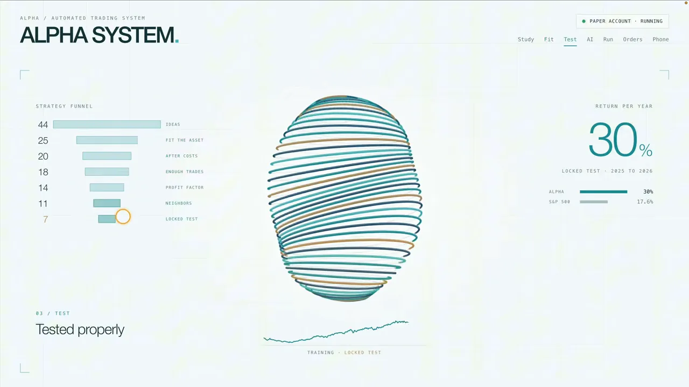
발표자 브렌던은 투자은행에서 3년 넘게 일했고, 2년째 Claude로 고객들의 매매 시스템을 만들어 왔다고 소개해요. 강의는 ALPHA(Architecture, Logic, Proof, Harness, Adapt) 다섯 글자 순서로 가요. Architecture(설계), Logic(논리), Proof(증명), Harness(실행 장치), Adapt(적응)예요. 아래 그림은 3시간 동안 나오는 프롬프트를 글자별로 모은 거예요.
봇과 시스템은 달라요
왼쪽 '봇'은 규칙 하나가 곧장 주문으로 가요. 'NVIDIA가 일주일에 5% 떨어지면 사고, 제자리로 오면 판다' 같은 거예요. 들어오는 데이터를 확인하지도, 규칙이 통하는지 시험하지도, 고장 나면 멈추지도 않아요. 오른쪽 '시스템'은 같은 규칙 둘레에 데이터, 시험, 리스크, 주문, 알림, 리뷰를 둬요. 리스크는 규칙과 주문 사이에서 내 위험 한도를 넘는 주문을 거절해요. 리뷰는 매주 전체를 점검해요. 이걸 Claude가 다 만들어요.
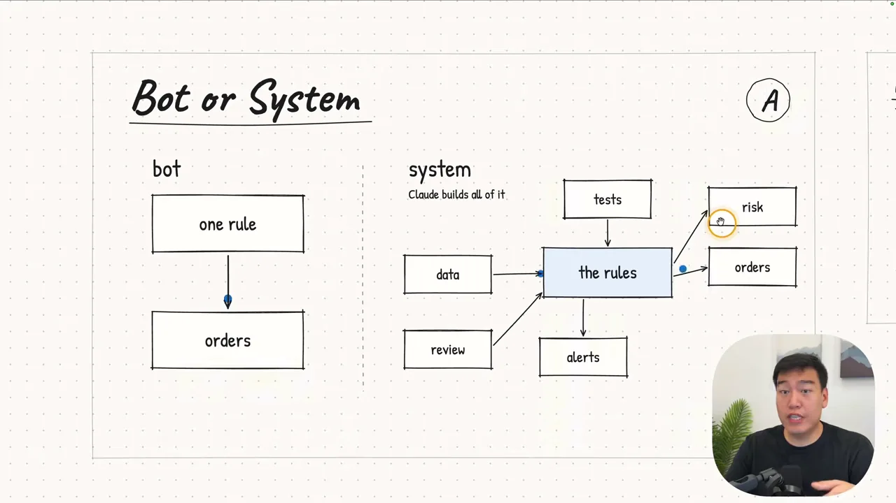
폴더 하나, 앱 하나, 키는 손으로
시스템은 내 컴퓨터의 폴더 하나에 살아요. 그 폴더를 읽고 고칠 수 있는 앱이 필요해요. 그림 왼쪽이 그 구조예요. 폴더 안에 규칙·코드·결과 파일이 있고, 아래에 대화 기록이 쌓여요. 오른쪽의 자물쇠 걸린 .env 파일은 'by hand', 즉 사람이 직접 적는 파일이에요.
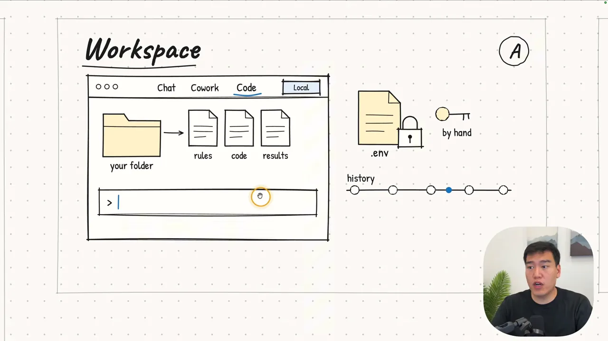
브라우저의 claude.ai로는 안 돼요. 올린 파일만 볼 수 있고 컴퓨터에서 아무것도 실행하지 못하거든요. Claude 데스크톱 앱(또는 ChatGPT의 Codex 데스크톱 앱)은 폴더 안 파일을 고치고, 백테스트와 봇을 돌리고, 예약 작업도 할 수 있어요. Pro 이상 유료 플랜이 필요해요.
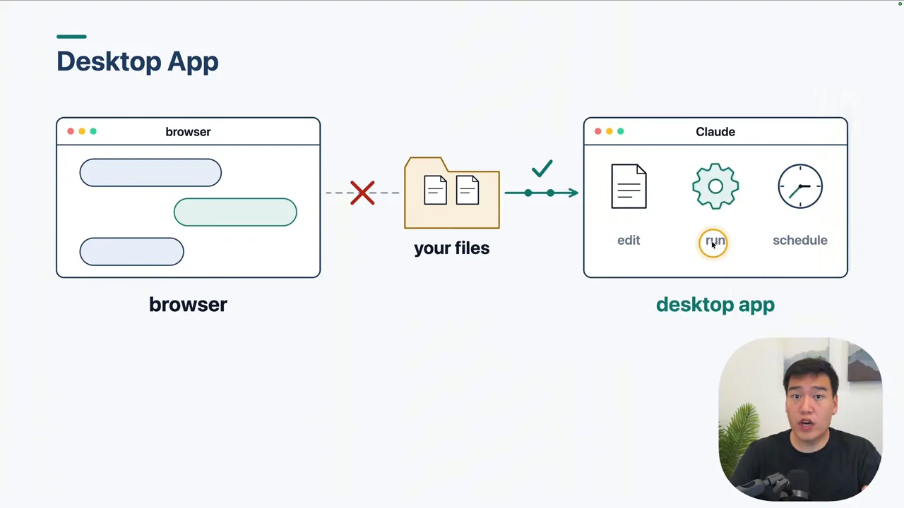
앱을 열면 로컬 모드로 두고, 빈 폴더(발표자는 claude lab)를 고른 뒤 '작업 공간 신뢰'를 눌러요. 권한 모드는 자동이나 권한 우회를 권해요. 이 폴더 안에서만 작업하니 개발 초기에 변경마다 승인할 필요가 없다는 이유예요. 그리고 브로커 API(Application Programming Interface) 키는 절대 Claude에게 붙여 넣지 않아요. Alpaca나 IBKR(Interactive Brokers) 키를 .env 파일에 손으로 적고, 모든 프롬프트에 'Claude는 이 파일을 열거나 출력하지 않는다'는 규칙을 넣어요.
모델은 일에 맞춰 나눠 써요
슬라이드는 모델 넷을 쓰임으로 나눠요. 초록 테두리로 강조한 Opus 5.5가 기본이에요.
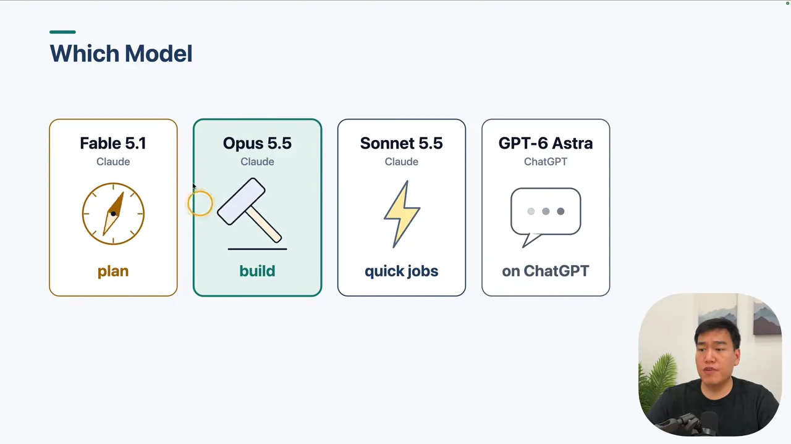
Fable 5.1은 가장 강하지만 느리고 한도를 빨리 써요. Pro 플랜에서는 추가 사용량으로 과금된다고 해요. 그래서 처음 시스템을 짜거나 안전 점검처럼 한 번에 맞아야 하는 일에만 써요. Opus 5.5는 거의 비슷한 품질에 빠르고 한도를 덜 써요. 프롬프트를 실행하고 코드를 쓰고 오류를 고치는 일은 여기 맡겨요.
막연한 프롬프트와 정확한 프롬프트
왼쪽은 '트레이딩 봇 만들어 줘'의 결과예요. 엉킨 낙서 같은 큰 파일 하나가 나와요. Claude가 전략과 기간을 멋대로 고르고, 비용을 빼먹고, 통하는지 알 길이 없어요. 같은 말을 다시 하면 전혀 다른 봇이 나와요. 오른쪽이 강의의 방식이에요. 체크리스트 다섯 줄을 지키면 결과가 표로 정리돼 나와요.
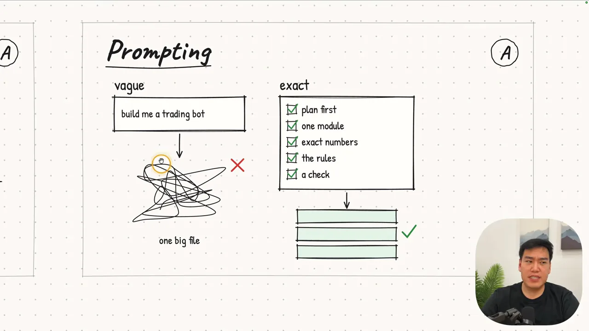
'정확한 숫자'는 이런 거예요. '오래된 기간' 대신 정확한 날짜, '비용 반영' 대신 '매수·매도마다 0.05%'. '확인'은 매 프롬프트 끝에 차트, 표, 시험 실행 중 하나와 한 줄 요약을 받는 거예요. 다음 모듈로 넘어가기 전에 말이 되는지 보는 장치예요.
모든 작업은 세 단계로 자라요. 한 번 하는 건 프롬프트, 반복할 일은 이름으로 부르는 스킬(/backtest 같은), 정해진 때 저절로 하는 일은 스케줄이에요.
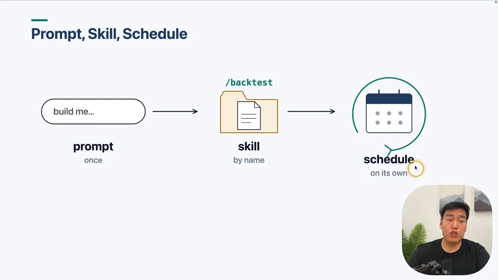
프롬프트 0: 빈 프로젝트와 하우스 규칙
프롬프트 0은 전략 없이 뼈대만 세워요. data, src, results, reports, config, logs, calls, dashboard, tests 폴더를 만들고, Claude가 매 세션 시작 때 읽는 CLAUDE.md에 하우스 규칙을 적어요. 같은 내용을 AGENTS.md에도 복사해 Codex에서도 통하게 해요. 화면의 '내 설정' 블록이 다른 시장으로 옮길 때 바꾸는 유일한 곳이에요.
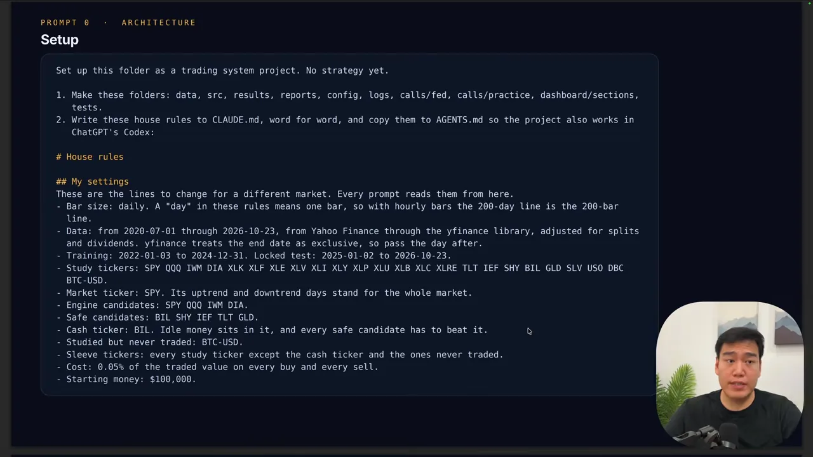
| 설정 | 발표자 값 | 바꾸는 경우 |
|---|---|---|
| 봉 크기 | 일봉 | 장중 매매라면 분봉으로 (데이터를 사야 해요) |
| 데이터 | Yahoo Finance(yfinance), 수정 주가 | 산 데이터 파일을 폴더에 넣으면 그걸 써요 |
| 학습 구간 / 잠긴 검증 | 2022-01-03~2024-12-31 / 2025-01-02~ | — |
| 엔진 후보 | SPY(SPDR S&P 500 ETF Trust), QQQ, IWM(iShares Russell 2000 ETF), DIA(SPDR Dow Jones Industrial Average ETF Trust) | 코어로 들고 갈 주력 자산을 늘릴 때 |
| 안전 자산 후보 | BIL(SPDR Bloomberg 1-3 Month T-Bill ETF), SHY(iShares 1-3 Year Treasury Bond ETF), IEF(iShares 7-10 Year Treasury Bond ETF), TLT(iShares 20+ Year Treasury Bond ETF), GLD(SPDR Gold Shares) | 하락기에 옮겨 갈 자산을 늘릴 때 |
| 비용 | 매수·매도마다 0.05% | 코인처럼 수수료가 큰 시장 |
| 시작 자금 | 10만 달러 | 내 계좌 잔고 |
결과마다 '지문(fingerprint)' 한 줄이 찍혀요. Claude는 같은 프롬프트에도 매번 조금 다르게 답하니, 설정을 그대로 두면 이 줄이 발표자 화면과 거의 같아야 제대로 따라가고 있는 거예요. 실행이 끝나면 Claude가 하우스 규칙을 읽어 주고, 폴더와 첫 대시보드가 만들어져 있어요.
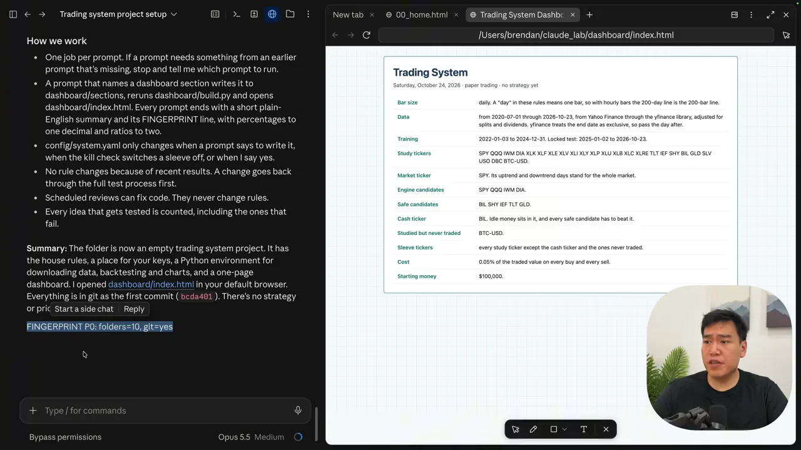
시스템 배치도: 데이터에서 주문까지
데이터에서 주문까지 한 방향으로 흘러요
'The Machine' 그림을 왼쪽부터 따라가요. 데이터 → 레짐 → 코어·슬리브 → 리스크 → 주문 → 브로커, 그리고 주문 뒤에 로그·알림·대시보드가 붙어요. 아래쪽 괄호가 중요해요. 백테스트와 실제 봇이 '같은 코드'를 써요. 오른쪽 아래 config 스위치들이 그 코드에 넣는 설정이에요.
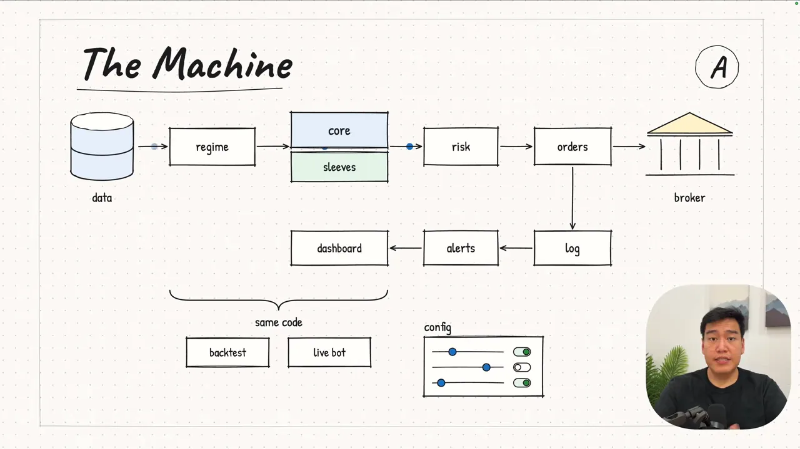
데이터는 티커별 하루 한 봉(시가·고가·저가·종가·거래량)이에요. 레짐은 지금이 어떤 시장인지를 두 가지로만 판단해요. 장기 평균선 위인가 아래인가, 차분한가 요동치는가. 레짐이 코어·슬리브보다 먼저 오는 이유는, 시장 상태를 알아야 어떤 전략을 돌릴지 정할 수 있어서예요.
리스크는 전략이 '사자'고 해도 주문 직전에 막는 관문이에요. 주문이 너무 크거나, 계좌의 100%를 넘거나, 나쁜 날 다음에 새 슬리브를 열려 하면 거절해요. 자동 봇은 아무도 지켜보지 않으니 이게 특히 중요해요. 어떤 날 전략 20개가 한꺼번에 터져 자금을 다 쓸 수도 있거든요. 백테스트 기간을 2022년부터로 잡는 것도 같은 맥락이에요. 2000년이나 2008년은 지금과 너무 다른 시장이라고 봐요.
코어는 오래, 슬리브는 자주
계좌는 전략의 포트폴리오예요. 주식 한 종목에 몰빵하지 않듯 전략도 나눠요. 그림 왼쪽 큰 빗금 칸이 코어(70%)이고, 오른쪽 작은 칸들이 10%씩인 슬리브예요. 아래 줄을 보면 코어는 QQQ와 금 사이를 '드물게' 오가고, 슬리브는 점선 칸을 들락날락하며 '자주' 바뀌어요.
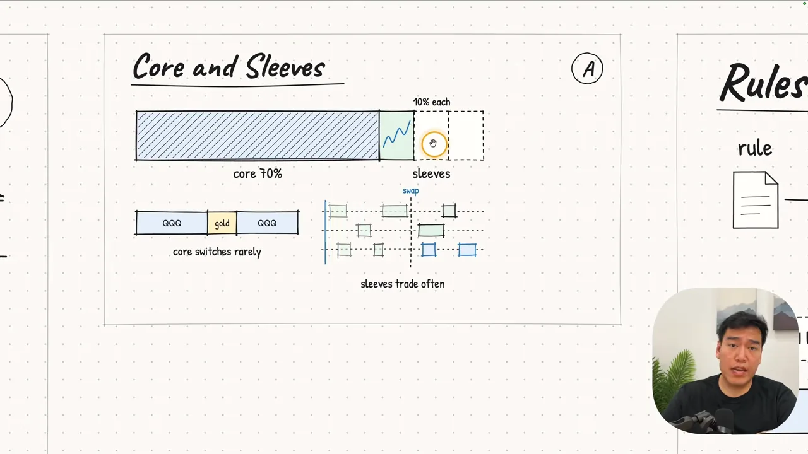
코어는 현금보다 나은 장기 보유 자리예요. 이 강의에서는 QQQ가 200일 평균 위면 QQQ, 아래면 금을 들어요. 슬리브는 눌림목 매수, 신고가 돌파처럼 짧은 전략이에요. 평균 회귀, 페어 밸류 갭, 스윕 같은 데이 트레이딩 규칙도 여기에 들어가요. 단기 전략은 시장이 바뀌면 통하지 않게 되는 전략 쇠퇴를 겪어요. 그래서 슬리브는 시험해서 넣고, 안 되면 은퇴시켜요. 그동안 코어는 그 아래에서 계속 돌아요.
비율은 목표에 따라 바꿔요. 보수적으로 가면 코어 70%예요. 시장을 이기기보다 매일 수입을 원하는 데이 트레이더라면 코어를 50%나 0%까지 낮추고 슬리브를 키워요.
규칙이 매매하고, AI는 위에 얇게
그림 왼쪽 '규칙'은 같은 입력에 늘 같은 답(QQQ, QQQ, QQQ)을 내서 체크 표시를 받았어요. 오른쪽 'AI'는 연준 문서를 읽고 hold·gold·cash 중 매번 다르게 답할 수 있어요. 아래 줄이 결론이에요. AI 층은 코어에만, 5·10·20일 기한으로, 먼저 저장한 뒤에만 적용되고, 매매는 규칙이 해요.
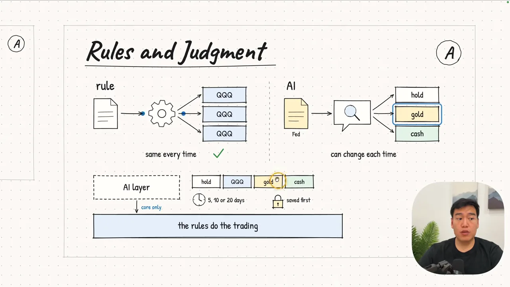
AI는 규칙이 못 읽는 걸 읽어요. 연준 성명, 실적 보고서, 내부자 보고서 같은 글이에요. 예를 들어 Claude가 성명을 읽고 '앞으로 2주는 금이 안전하다'고 판단하면, 규칙이 QQQ로 돌아가라고 해도 코어는 10일 더 금을 들어요. 시험할 수 있는 일은 규칙이 하고, AI는 제한된 작은 변화만 얹어요.
무엇을, 어느 시간 단위로 거래할까요?
목표, 시간, 시장 순서로 정해요
로직은 시험하기 전에 전략이 무엇이어야 할지 정하는 단계예요. 핵심 생각은 '전략은 그것이 사고파는 자산에 맞아야 한다'예요. 테슬라 전략과 금 전략과 비트코인 전략은 서로 달라요. 정하는 순서는 목표 → 시간 단위 → 시장이에요.
목표를 재는 잣대가 낙폭이에요. 그림에서 계좌가 꼭대기에서 빨간 구간만큼 떨어졌다 회복해요. 10만 달러가 8만 달러가 되면 20% 낙폭이에요. 오른쪽 상자처럼 수익을 낙폭으로 나눈 값으로 모든 전략을 평가해요. 둘 다 연 20%를 벌어도 중간에 10% 빠진 전략이 40% 빠진 전략보다 나아요.
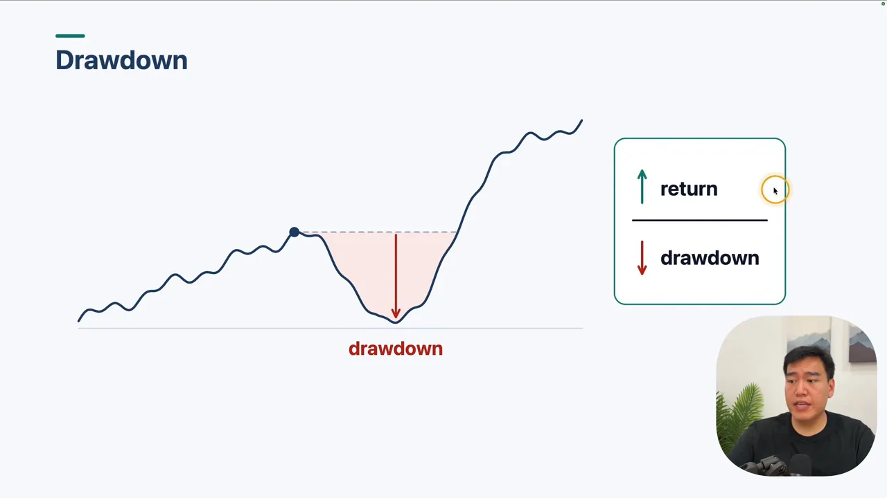
왜 일봉일까요
위 줄 'minute'은 장 내내 빽빽한 거래 표시와 높이 쌓인 동전(비용)이에요. 아래 줄 'daily'는 9:30~4시 사이가 비어 있고, 7시에 톱니(봇)가 한 번 돌고, 동전은 얇아요.
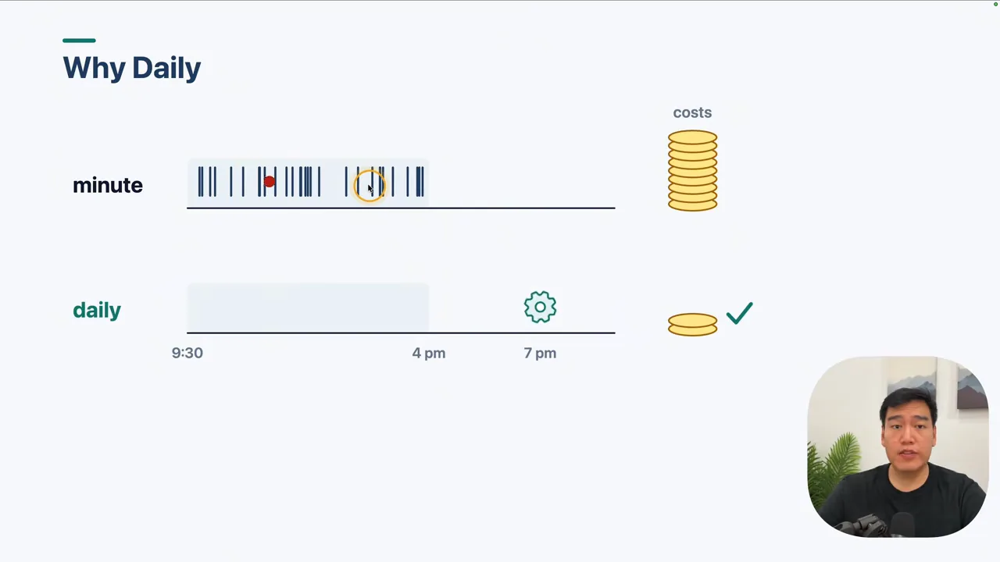
- 비용: 강의는 매수·매도마다 0.05%로 잡아요. 매일 거래하는 전략은 수익의 약 25%를 비용으로 내요. 빨리 거래할수록 거래당 더 벌어야 본전이에요.
- 체결: 분봉 봇은 주문이 들어가는 사이 가격이 움직여요. 35.13달러에 냈는데 36.20달러에 체결되는 슬리피지가 생겨요. 일봉 봇은 저녁에 넣은 주문이 다음 날 시가에 체결되니 백테스트가 가정한 그대로예요.
- 운영: 분봉 봇은 장 내내 실시간 피드를 받으며 컴퓨터가 켜져 있어야 해요. 일봉 봇은 하루 한 번 돌면 돼요.
발표자는 분봉이 안 된다는 게 아니라 '실력 문제'라고 해요. 정말 좋은 자동 전략이 있으면 분봉도 괜찮지만 훨씬 어렵다는 거예요.
데이터: 무엇을, 얼마나, 어디서
가격 봉은 시가·종가·고가·저가와 거래량으로 이뤄져요. 가운데 막대가 무료로 받을 수 있는 기간이에요. 1분봉은 1개월, 5분봉은 2개월, 1시간봉은 2년뿐이고, 일봉과 주봉은 수십 년이에요. 오른쪽 그림은 수정 주가예요. 원래 가격(raw)은 주식 분할(split) 때 뚝 떨어진 것처럼 보이고, 수정 주가는 이어져요.
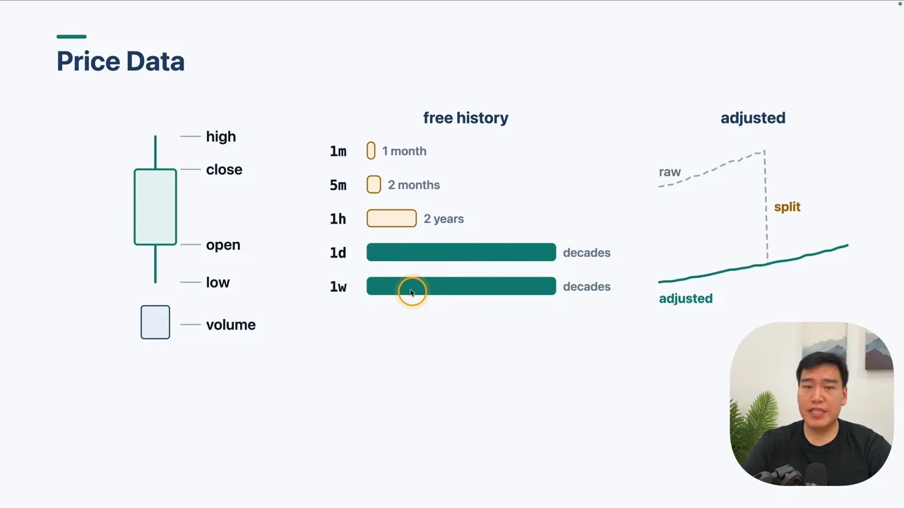
데이터는 두 갈래예요. 과거 데이터는 몇 년 치를 한 번 내려받아 파일로 저장하고, 모든 시험을 그 사본으로 돌려요. 시험 중에 바뀌지 않으니 모든 시험이 같은 가격을 봐요. 실시간 피드는 장중에 가격이 들어오는 연결이에요. 연결이 살아 있을 때만 받고, 전체 피드는 대개 유료예요. 그림처럼 일봉 봇은 둘이 '같은 출처'예요. 장이 끝난 뒤 판단하니 오늘 봉도 이미 과거 데이터예요.
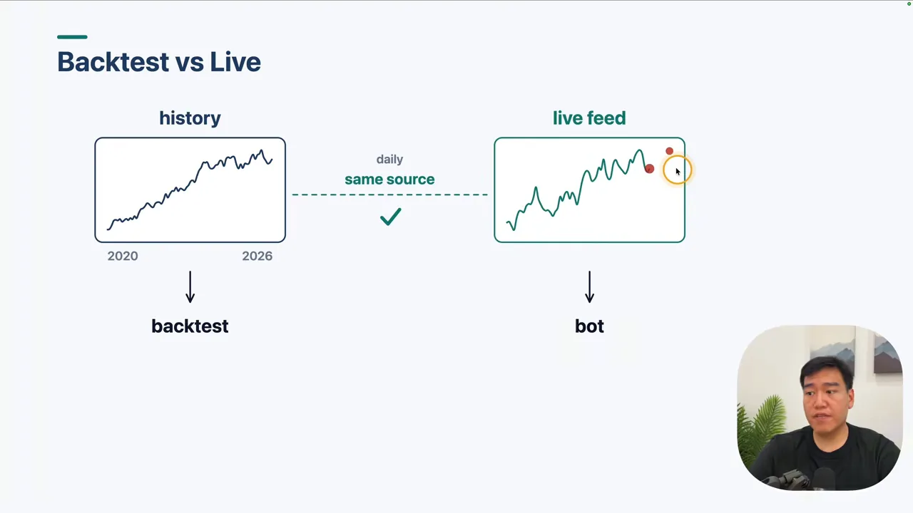
분봉을 하려면 과거 분봉 데이터를 사야 해요. 화면 표에 선택지가 있어요. Yahoo는 약 60일 무료, Alpaca는 계좌가 있으면 2016년부터 무료, Massive는 5~20년 이상을 월 구독으로, Databento는 16년 이상을 GB(Gigabyte)당 과금으로, 파일 일괄 구매는 15년 치예요. 발표자는 월 29달러에서 199달러 이상까지라고 해요. 옵션과 선물 데이터는 더 비싸요.
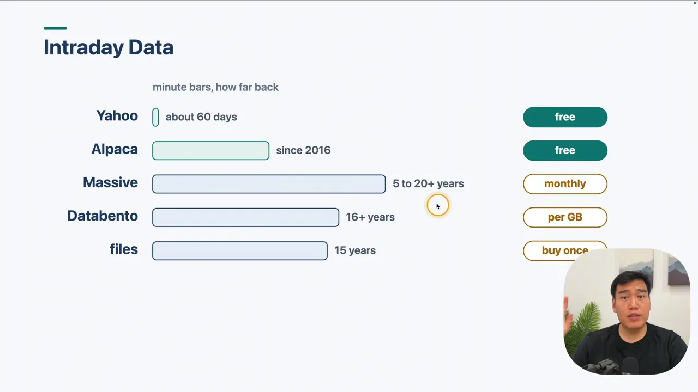
무엇을 거래할지 고르기
왼쪽 네 줄이 자산마다 확인하는 것이에요. 거래량(많을수록 사고팔 때 호가 차이가 좁아 비용이 적어요), 시험할 만큼 긴 이력, 데이터를 받을 수 있는지, 그리고 내 브로커가 거래를 허락하는지예요. 오른쪽 네 칸 중 초록 ETF(Exchange-Traded Fund)가 이 강의가 쓰는 자산이에요.
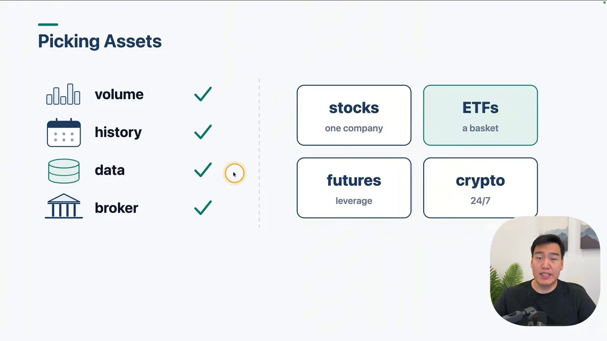
강의는 ETF 23개와 비트코인을 연구해요. 서로 같이 움직이지 않는 주식 펀드, 금, 채권을 섞으라고 해요. 선물은 레버리지를 쓸 수 있지만 위험이 커지고, 코인은 24시간 거래되는 다른 자산이에요.
자산마다 움직이는 방식이 달라요
손그림 네 칸이 자산의 성격이에요. 왼쪽 위 '계속 감'은 한번 오르면 계속 오르는 모멘텀이에요(QQQ 같은 대형 기술주 펀드). 오른쪽 위 '되돌아옴'은 급락 뒤 점선 평균으로 돌아오는 평균 회귀예요(SPY 같은 대형 주식 펀드). 왼쪽 아래 '버팀'은 점선(주식)이 빠질 때도 파란 선이 평평해요(유틸리티 펀드). 오른쪽 아래 '거침'은 양쪽으로 크게 흔들려요(비트코인).
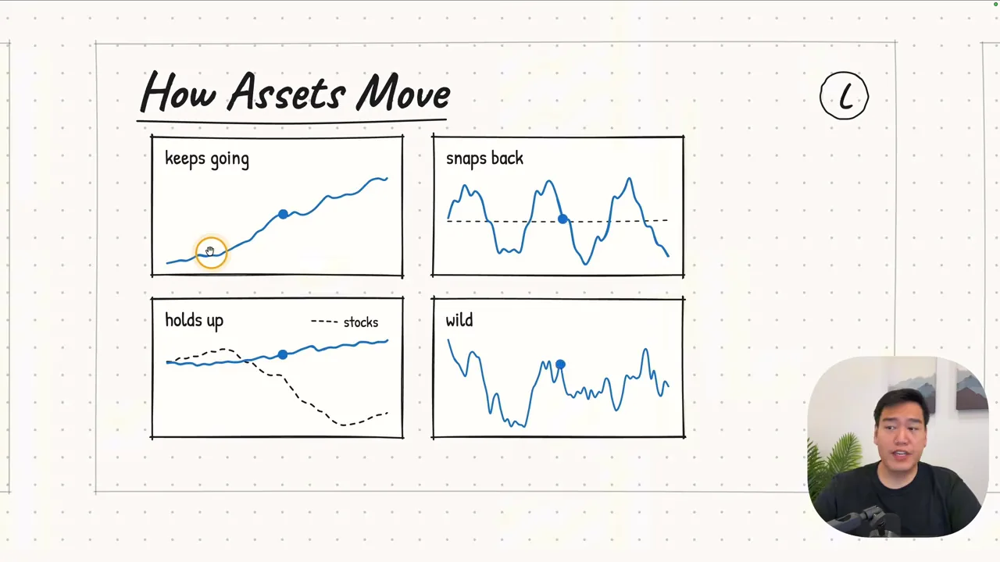
발표자는 분봉으로 내려가면 차트 대부분이 평균 회귀처럼 보인다고 덧붙여요. ICT(Inner Circle Trader)의 페어 밸류 갭이나 스윕도 결국 같은 평균 회귀 개념이라고 해요.
자산 연구: 다섯 가지 질문
왼쪽 체크리스트가 자산마다 묻는 다섯 가지예요. 신고가 뒤 계속 가나? 급락 뒤 되돌아오나? 주식과 같이 움직이나? 주식이 빠질 때 어떤가? 얼마나 거친가? 오른쪽 두 그림이 판정 방법이에요. 위는 '급락 뒤 다음 5일', 아래는 '신고가 뒤 다음 20일'을 봐요.
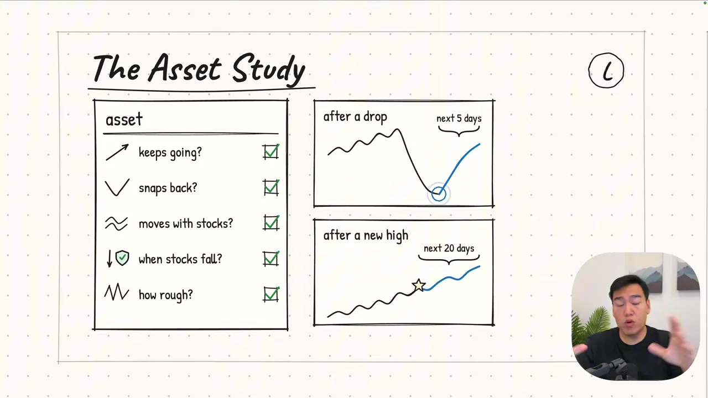
- 되돌아오나: 가격이 200일선 위에 있을 때 RSI(2)가 10 아래로 떨어진 날을 모아요. 그 뒤 5일 수익이 평소 5일 평균보다 좋으면 '되돌아옴'이에요. 사례가 12개 이상이어야 해요.
- 계속 가나: 200일선 위에서 최근 50일 중 최고 종가가 나온 날을 모아요. 그 뒤 20일 수익이 평소 20일보다 좋으면 '계속 감'이에요. 사례가 6개 이상이어야 해요.
- 추가로 둘: 상승일과 하락일 성적 차이(추세 격차), 차분한 날과 요동치는 날의 하루 평균 움직임이에요.
프롬프트 1을 돌리면 학습 구간으로 24개 티커에 이름표와 한 줄 설명이 붙어요. 표에서 SPY는 '되돌아옴'(Snaps back), QQQ는 '계속 감'과 '되돌아옴' 둘 다예요. 약 12개가 '계속 감'이었고 SPY·IWM·DIA가 '되돌아옴'이었어요.
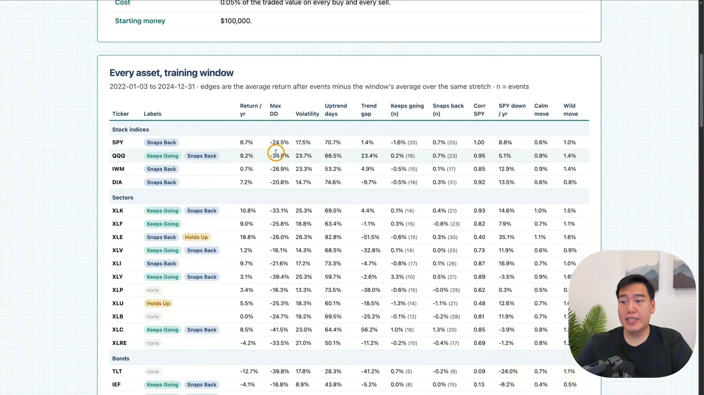
대시보드 아래에는 상관관계 히트맵이 있어요. 1(진한 초록)은 똑같이, 0은 무관하게, -1은 반대로 움직인다는 뜻이에요. 주식 펀드들은 왼쪽 위에 진한 초록 덩어리로 모여 있고, 채권과 금은 거의 칠해지지 않았어요. 코어가 QQQ와 금을 오가는 건 이 둘이 같이 움직이지 않아서예요.
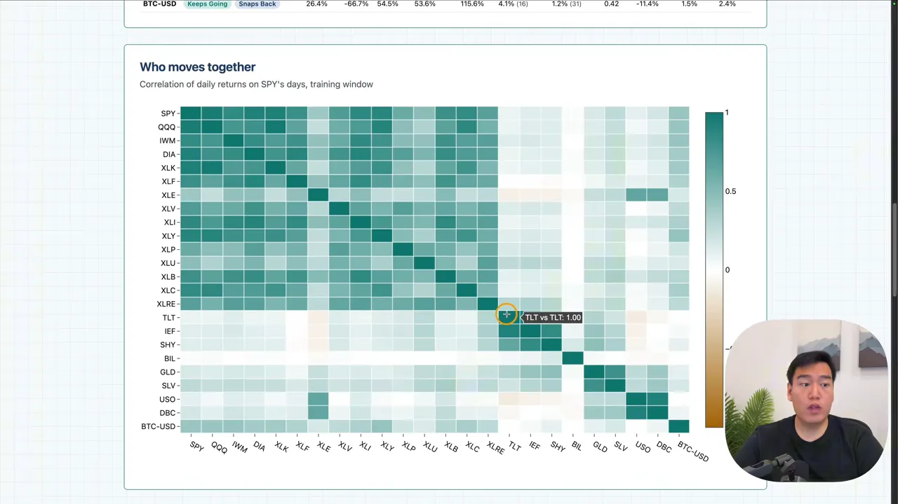
레짐, 전략 짝짓기, 정확한 규칙
레짐: 200일선 위인가, 아래인가
레짐은 지금이 어떤 시장인가예요. 가장 단순한 버전은 파란 선, 200일 이동평균(약 10개월 평균 종가)이에요. 가격이 그 위면 상승, 아래면 하락이에요. 그림 아래 두 표가 규칙이에요. 왼쪽 표는 추세가 오르면 코어는 엔진을 들고 눌림목 매수를 켜고, 내리면 안전 자산을 들고 눌림목 매수를 끈다는 뜻이에요. 오른쪽 표는 차분하면 전액, 요동치면 절반을 산다는 뜻이에요.
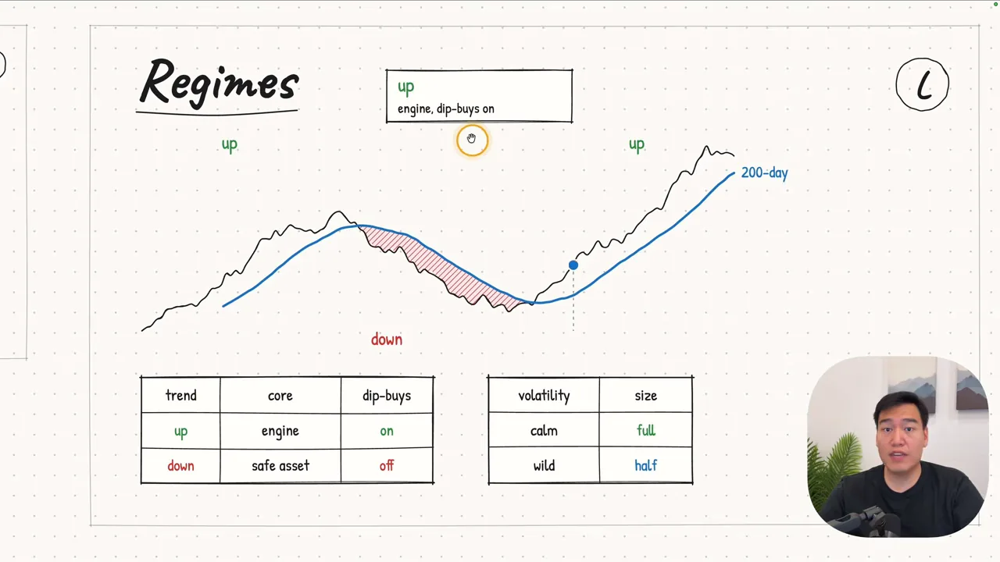
크기를 줄이는 이유는 이래요. 요동치는 날에는 같은 금액이라도 오를 때와 내릴 때 모두 두 배쯤 움직여요. 그날 크기를 절반으로 줄이면 늘 차분한 날과 같은 위험으로 거래하는 셈이에요. 레짐은 그 자체로 전략이 아니라, 모든 전략이 거래 전에 읽는 층이에요.
레짐은 해마다도 바뀌어요
위 선은 시장이에요. 차분한 시기, 폭락, 횡보, 금리 상승기로 구간이 나뉘어요. 아래 초록 선이 단기 슬리브 하나의 성적이에요. 차분한 시기와 폭락을 지나며 오르다가, 횡보에서 평평해지고, 금리가 오르자 '작동 멈춤'이 붙었어요.
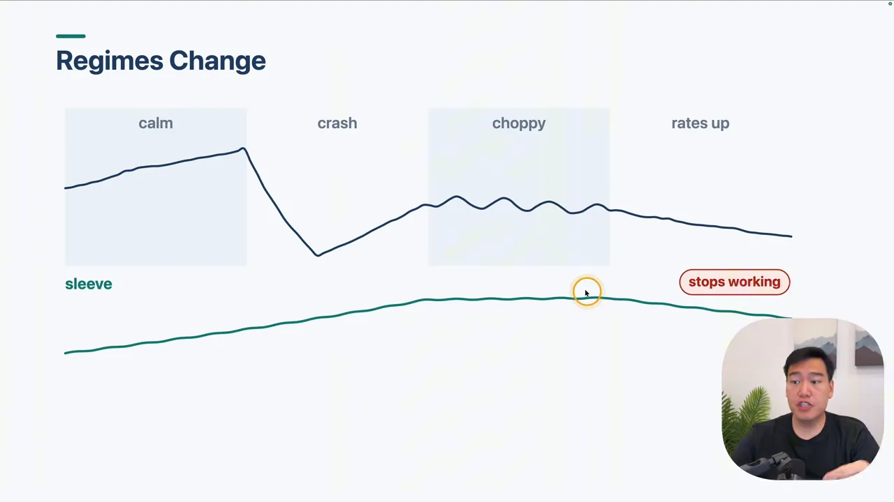
VIX와 시장 폭
레짐을 재는 다른 도구가 둘 있어요. 왼쪽 VIX(Cboe Volatility Index)는 S&P 500 옵션 가격에서 나오는 공포 지수예요. 큰 움직임에 대비해 사람들이 옵션에 돈을 더 내면 올라요. 점선이 지난 1년 중앙값이고, 빨간 점에서 그 위로 튀어 오른 게 'VIX 높음'이에요. 오른쪽 시장 폭은 종목 중 자기 200일선 위에 있는 비율이에요. 그림은 65%예요. 아래 줄이 발표자가 예전 연구에서 찾은 규칙이에요.
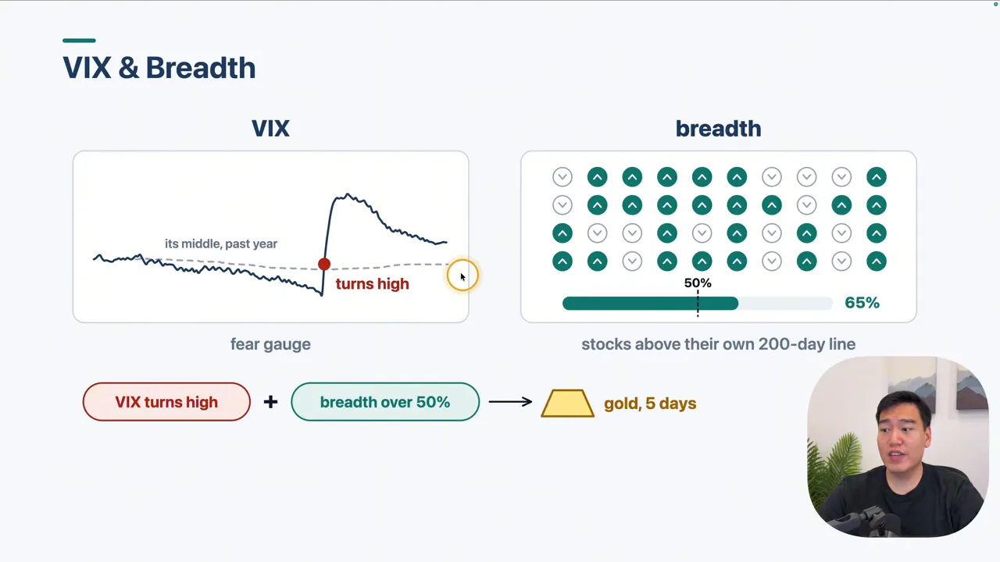
이 규칙은 이전 영상에서 GPT(Generative Pre-trained Transformer) Astra로 돌린 큰 연구에서 살아남은 것이라고 해요. 시스템에 붙이고 싶으면 뒤의 프롬프트 5B를 써요.
같은 눌림, 다른 결과
그림 왼쪽은 상승 추세 위의 눌림이라 튀어 올라요(체크). 오른쪽은 하락 추세 아래의 같은 눌림이라 계속 빠져요(X). 상승 추세의 급락은 잠깐 쉬어 가는 거고, 하락 추세의 급락은 더 빠질 가능성이 커요.
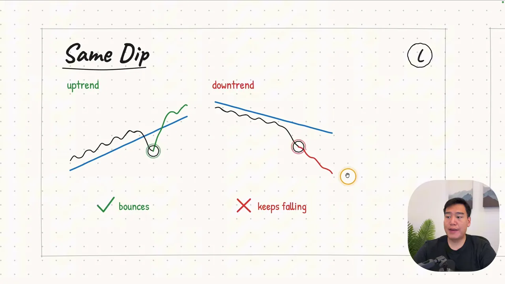
실제 연구 결과도 그랬어요. QQQ는 200일선 위에서 눌린 뒤 성적이 좋았고, 선 아래에서는 평소보다 더 떨어졌어요. SPY는 거의 늘 상승 추세라 차이가 덜 두드러졌어요. 대시보드의 '차분 vs 요동' 막대도 봐요. 남색이 차분한 날, 갈색이 요동치는 날의 하루 평균 움직임이에요. 갈색이 대부분 두 배 가까이 높아요.
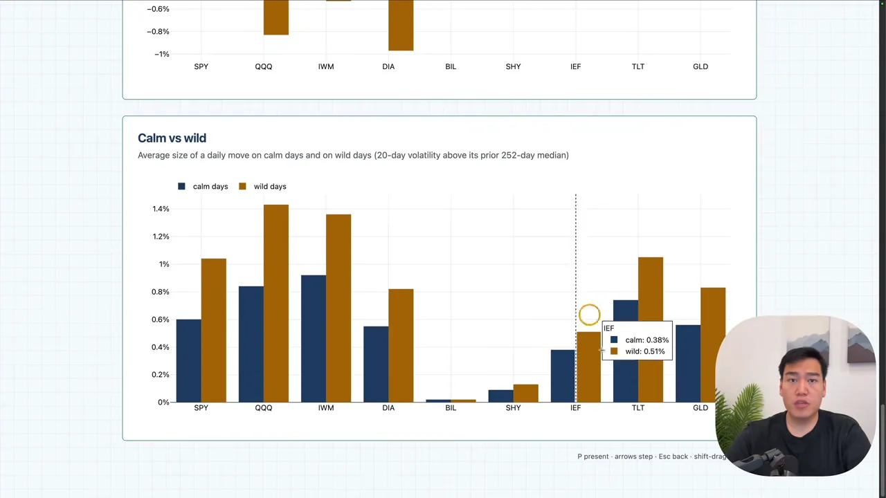
자산 성격에 맞는 전략 짝짓기
표의 행이 자산 연구 이름표, 열이 전략 종류예요. 체크는 대각선에만 있어요. 계속 가는 자산에는 신고가를 사는 돌파, 되돌아오는 자산에는 급락을 사는 눌림목 매수, 버티는 자산은 코어가 하락기에 들고 있을 안전 자산이에요.
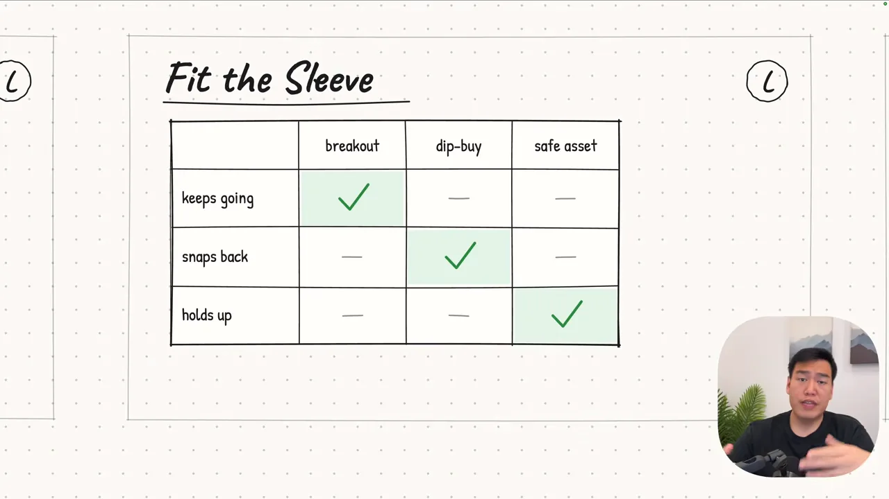
스크리너: 매일 밤 500종목 거르기
스크리너는 다른 방식이에요. 티커 하나를 연구하지 않고 매일 밤 S&P 500 500종목을 조건으로 걸러요. 오른쪽 세 조건이 이전 영상에서 찾은 예시예요. 200일선 위(상승 추세), 지난 60일 상승, 20일 평균보다 8% 아래(상승 추세 안의 급한 눌림). 셋 다 통과한 소수만 다음 날 시가에 사요.
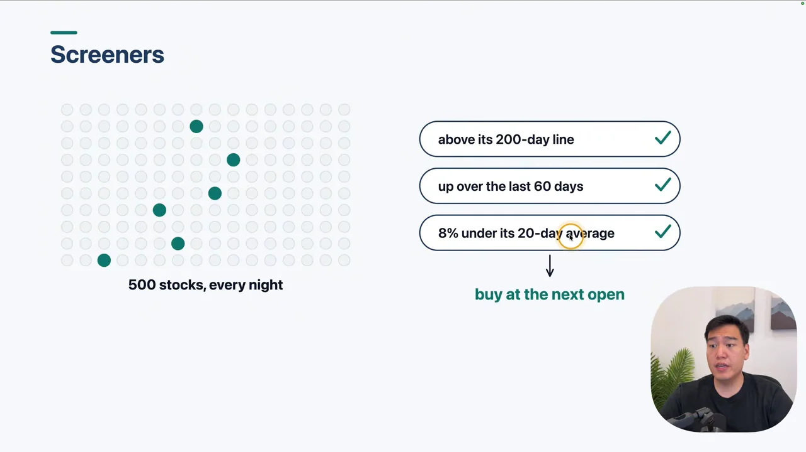
생각을 규칙으로: 일곱 칸
'눌림목을 사라'는 생각이지 규칙이 아니에요. 무엇이 눌림인지, 언제 나가는지 없으면 Claude도 시험 못 하고 봇도 거래 못 해요. 구름 속 생각이 오른쪽 일곱 칸 표가 돼야 해요.
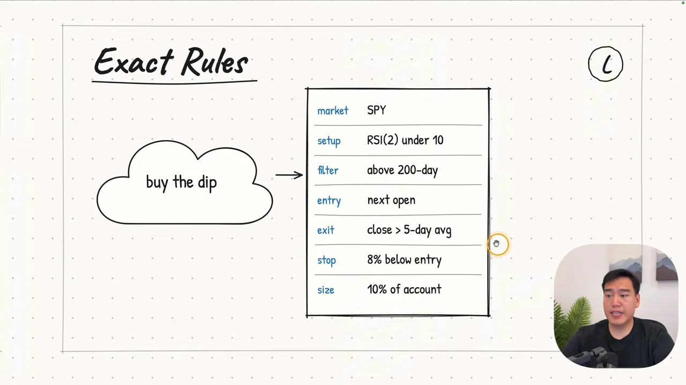
| 칸 | 예시 | 뜻 |
|---|---|---|
| 시장 | SPY | 어디서 거래하나 |
| 셋업 | RSI(2) 10 미만 | 살 신호. 이틀 연속 크게 빠지면 0 근처로 가요 |
| 필터 | 200일선 위 | 추가 조건(레짐) |
| 진입 | 다음 날 시가 | 언제 사나 |
| 청산 | 종가가 5일 평균 위로 회복, 또는 10일 경과 | 먼저 오는 쪽에 팔아요 |
| 손절 | 진입가 8% 아래 | 최대로 얼마나 잃나 |
| 크기 | 계좌의 10% | 얼마나 사나 |
백테스트를 믿을 수 있게 만들기
학습 구간과 잠긴 검증
증명은 규칙을 제대로 시험해서 숫자가 의미를 갖게 하는 단계예요. 백테스트는 좋아 보이게 만들기 쉬워서, 이 절 전체가 믿을 수 있는 백테스트를 만드는 이야기예요. 먼저 데이터를 둘로 나눠요. 파란 선 2022~2024년이 '여기서 조정'하는 학습 구간이에요. 자물쇠 달린 노란 상자 2025년~현재가 잠긴 검증이에요.
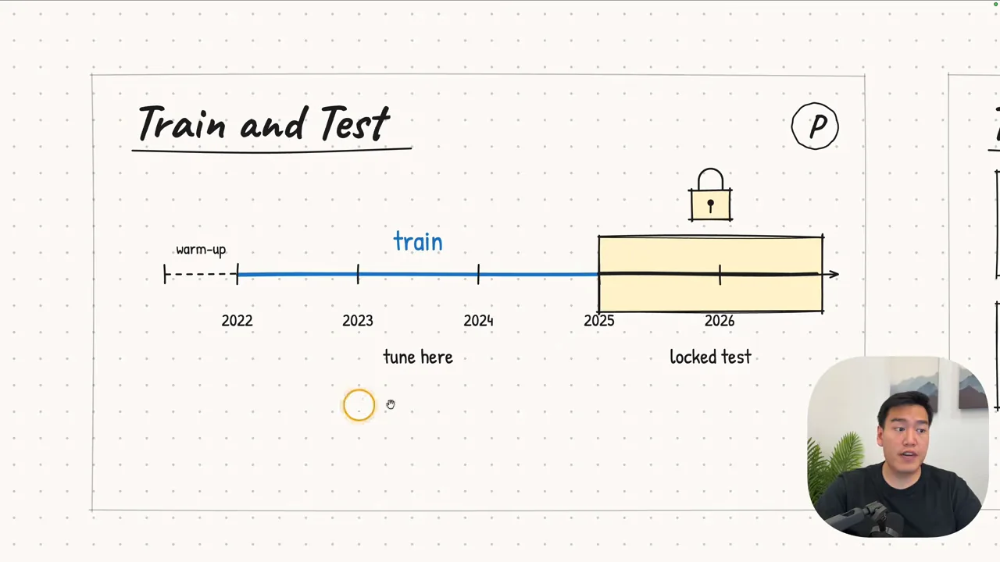
잠긴 검증에서 떨어지면 그 전략은 탈락이고, 통과하도록 아무것도 바꾸지 않아요. 결과가 마음에 안 들어 설정을 바꾸고 같은 구간으로 다시 돌리면, 그 구간은 학습 데이터가 돼 버려 더는 새로운 걸 알려 주지 못해요. 같은 데이터로 고르고 시험하면 그 데이터에만 맞는 과최적화가 생기고, 그런 전략은 새 데이터를 만나자마자 무너져요. 그래서 모든 프롬프트는 잠긴 검증을 한 번만 돌리고 나온 그대로 보고해요.
최근 데이터를 쓰는 것도 일부러예요. 2008년까지 거슬러 가면 앞으로 거래하지 않을 시장을 시험하는 셈이에요. 2022년 이후에는 짧은 약세장, 큰 회복, 몇 번의 급락이 다 들어 있어요.
최소 일곱 가지 검사
그림의 일곱 칸이 새 전략마다 확인하는 최소한이에요. 위 줄은 비용, 다음 날 시가, 2022년 이후 데이터, 잠긴 검증이에요. 아래 줄은 수익 대비 낙폭, 충분한 거래 수, 이웃이에요.
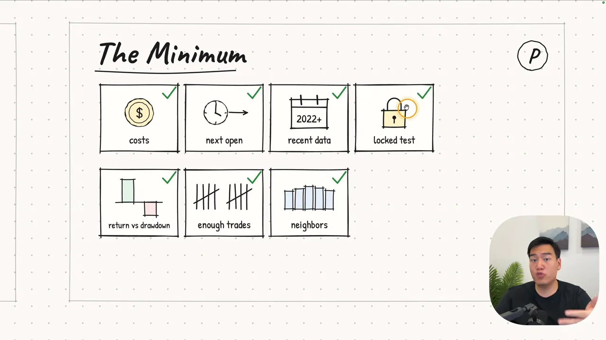
이웃은 숫자 하나만 조금 옮긴 같은 전략이에요. 200일선이 통하면 150일, 250일, 지수이동평균(EMA(Exponential Moving Average))도 통해야 해요. 왼쪽 '고원'은 200 양옆이 다 높아서 체크예요. 오른쪽 '뾰족'은 200만 높고 나머지가 낮아서 '운'이에요.
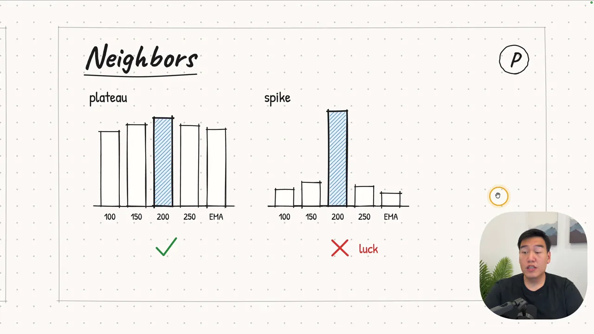
전략보다 백테스터부터 시험해요
백테스터는 전략을 과거 가격에 돌려 결과를 알려 주는 코드예요. Claude가 이 코드를 쓰는데, 버그가 있으면 이후 결과가 모두 틀려요. 코딩을 모르면 알아챌 수도 없어요. 그래서 코드를 읽는 대신 답을 아는 가짜 가격을 넣어 봐요. 그림의 세 칸이 그 시험이에요.
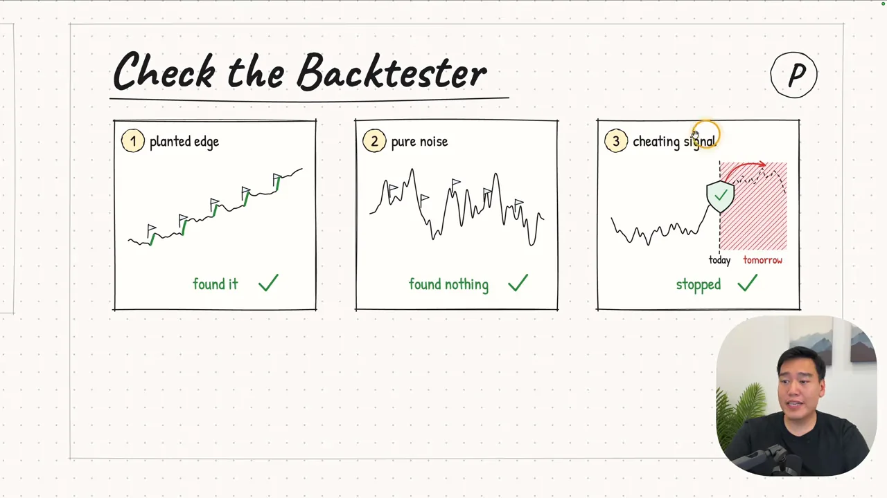
- 심은 수익: 깃발이 뜰 때마다 다음 날 1% 더 오르게 만든 가짜 가격이에요. 깃발에 사는 전략은 거래당 약 1%에서 비용을 뺀 만큼 벌어야 해요. 0.6~1.2%면 통과예요.
- 순수 잡음: 같은 깃발에 아무 수익도 없는 무작위 가격이에요. 결과는 0에서 비용을 뺀 값이어야 해요. 여기서 이익이 나오면 뭔가 고장 난 거예요.
- 부정 신호: 내일 종가가 오늘보다 높으면 사는 신호예요. 현실에서는 내일 가격을 모르니 불가능한 룩어헤드예요. 오늘 종가로 계산한 신호로 같은 날 시가에 사는 것처럼 실수로도 생겨요. 백테스터는 무작위로 30일을 골라 그날 뒤 데이터를 잘라내고 신호를 다시 계산해요. 값이 달라지면 미래를 본 것이니 오류를 내고 멈춰요.
통과 범위는 결과를 보기 전에 프롬프트에 적어 둬요. 결과를 보고 기준을 정하면 통과할 때까지 기준을 옮기기 쉬우니까요. 프롬프트 2는 백테스터를 만들고, 모든 전략 규칙을 적는 신호 파일을 시작해요. 백테스트와 실제 봇이 같은 파일을 읽어요. 첫 규칙은 코어가 쓰는 추세 전환이고, 이것도 실제 SPY 가격으로 같은 룩어헤드 검사를 통과해야 해요.
결과는 심은 수익 거래당 0.8%(비용 0.1% 뺀 뒤)로 기대 범위 한가운데, 잡음 -0.1%로 비용 말고는 아무것도 못 찾음, 부정 신호 차단, 실제 추세 전환 통과였어요. 이제 이 백테스터가 하는 말을 믿을 수 있어요.
코어와 슬리브 찾기, 그리고 선택 사항
코어 찾기: 다섯 단계
코어는 어느 시장이든 같은 다섯 단계로 찾아요. 그림의 번호대로 가요. ① 엔진 고르기는 엔진 후보마다 상승일 막대와 하락일 막대의 차이를 봐요. 별이 붙은 QQQ가 차이가 가장 커요. ② 안전 자산 고르기는 엔진의 하락일에 각 후보가 낸 성적이고, 별은 금이에요. ③ 전환 규칙, ④ 이웃 확인, ⑤ 잠긴 검증 한 번으로 이어져요.
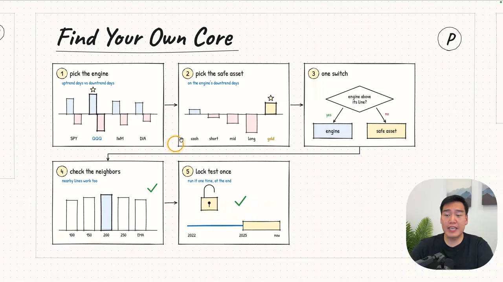
안전 자산은 엔진과 상관이 0.5 미만이어야 해요. 하나도 현금을 못 이기면 현금이 안전 자산이에요. 다른 엔진이나 안전 자산을 쓰고 싶으면 프롬프트 0의 엔진 후보와 안전 자산 후보 줄에 티커를 더해요. 프롬프트 3은 티커 이름을 하나도 적지 않고 설정에서 읽어요. 끝에는 2배 비용으로도 돌려 봐요.
결과 화면의 '안전 자산 고르기' 막대를 보면, 오른쪽 끝 초록 막대 GLD만 크게 위로 솟았어요. 단기·중기·장기 채권 펀드(SHY, IEF, TLT) 막대는 아래로 내려갔어요. 아래로 가장 길게 뻗은 TLT 막대 옆에는 '연 -18.2%, 상관 탈락'이라는 메모가 있어요.
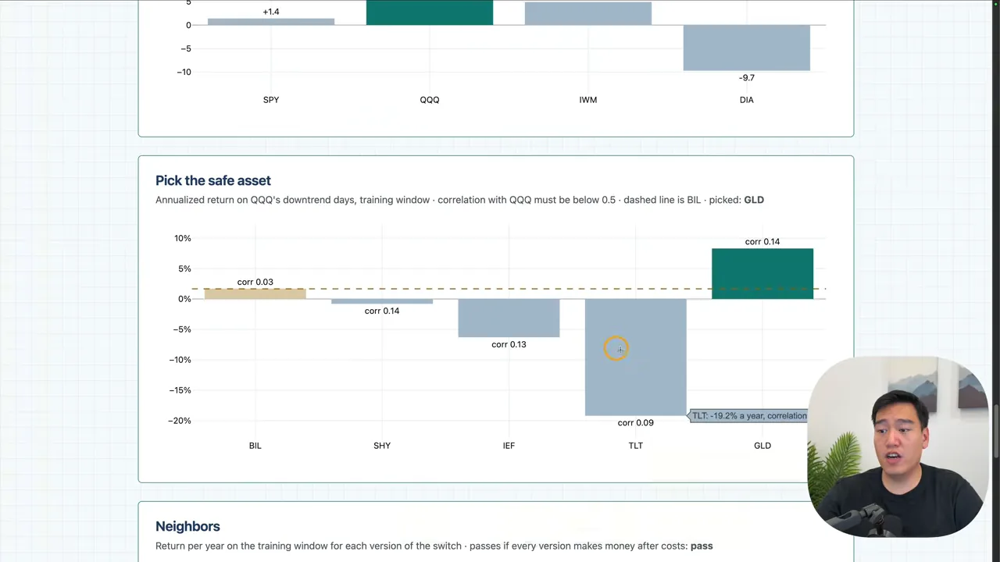
그래서 코어는 'QQQ가 200일선 위면 QQQ, 아니면 금'이에요. 그림의 아래 막대처럼 1년에 몇 번만 바뀌어요. 이렇게 드물게 바뀌면 비용이 거의 없고 완벽한 신호도 필요 없어요. QQQ를 그냥 들고 있는 것만 이기면 돼요.
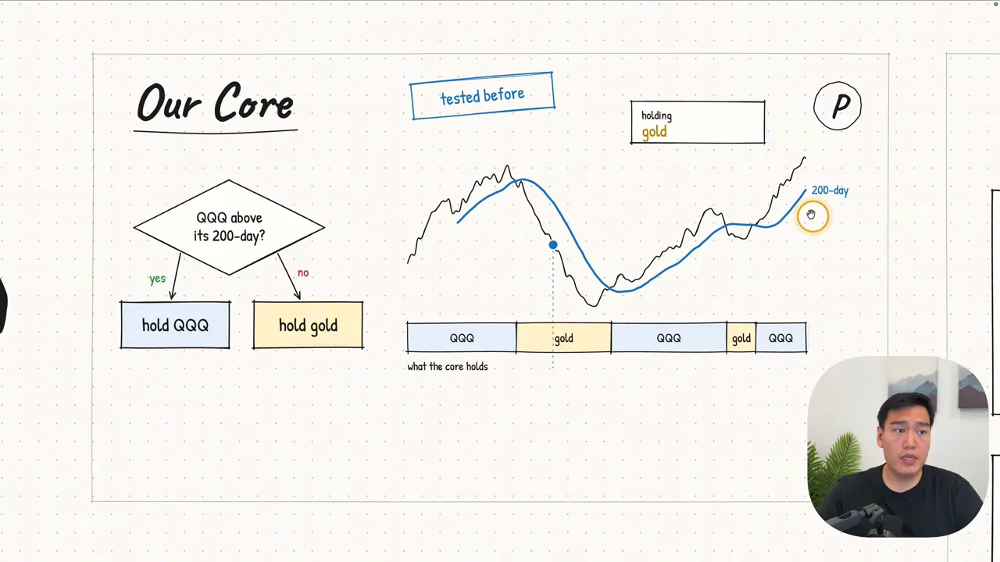
코어만의 성적이 결과 화면에 나와요. 학습 구간은 연 13.5%에 최대 낙폭 28.4%, 잠긴 검증은 연 24.8%에 최대 낙폭 11.2%예요. 아래 띠의 갈색 부분이 금을 든 기간이에요. 2025년 봄 QQQ가 200일선 아래로 내려가자 두어 달 금으로 옮겼다가 다시 돌아왔어요.
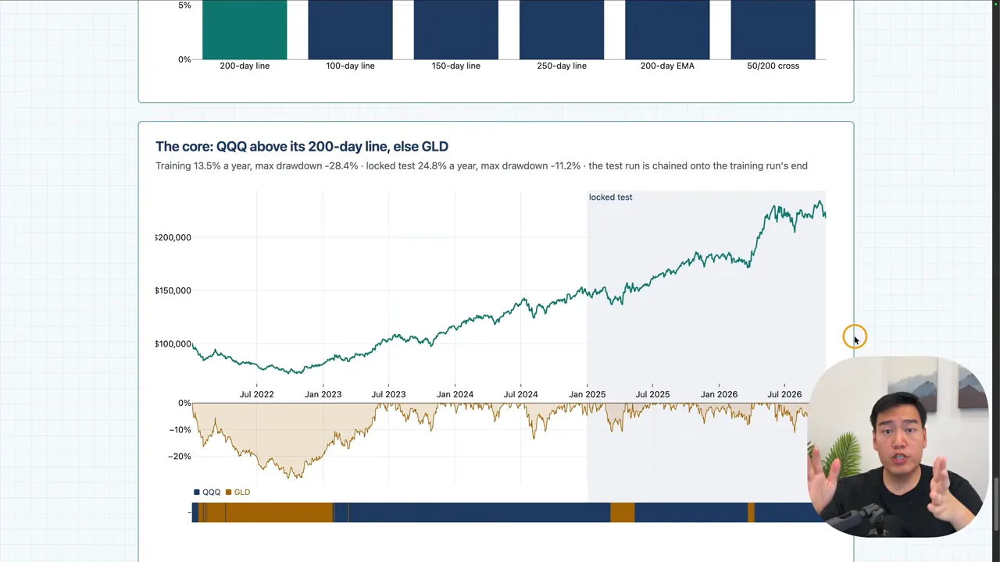
비용 점검 표는 비용을 2배(0.10%)로 올려도 거의 그대로임을 보여 줘요. 학습 구간은 연 13.5%에서 13.0%로, 잠긴 검증은 24.8%에서 24.3%로 내려갈 뿐이에요. 거래가 학습 구간 15번, 잠긴 검증 7번뿐이라서예요.
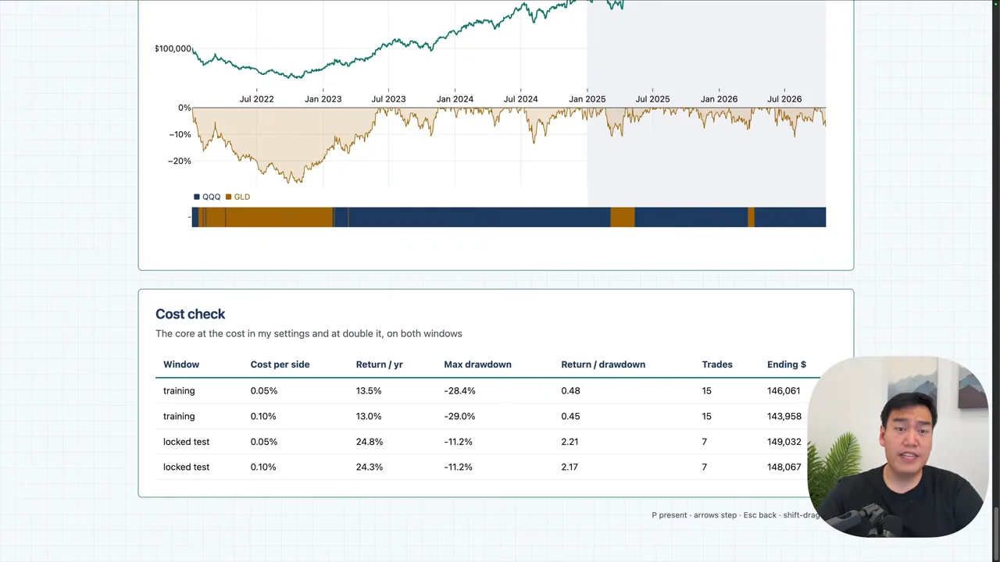
슬리브 찾기: 44개가 7개로
프롬프트 4는 두 종류 슬리브를 신호 파일에 정확한 규칙으로 더해요.
| 눌림목 매수 | 돌파 | |
|---|---|---|
| 맞는 자산 | 되돌아옴 | 계속 감 |
| 매수 | 200일선 위에서 RSI(2) 10 미만 → 다음 날 시가 | 200일선 위에서 50일 신고가 → 다음 날 시가 |
| 매도 | 종가가 5일 평균 위로 회복, 또는 10일 경과 | 20일 최저가, 또는 200일선 아래 마감 |
| 손절 | 진입가 8% 아래, 브로커에 걸어 둠 | 화면 기준 진입가 10% 아래 |
| 최소 거래 수(학습) | 15회 | 6회 |
| 이웃 설정 | RSI 5·15 미만, 3·10일 평균 청산 | 20·100일 고점 |
후보는 깔때기를 지나요. 자산 이름표에 맞는지, 학습 구간에서 비용 뒤 이익인지, 거래 수가 충분한지, 프로핏 팩터가 1.3 이상인지, 이웃도 이익인지, 잠긴 검증을 통과하는지예요. 결과 화면의 막대가 단계마다 남은 수예요.
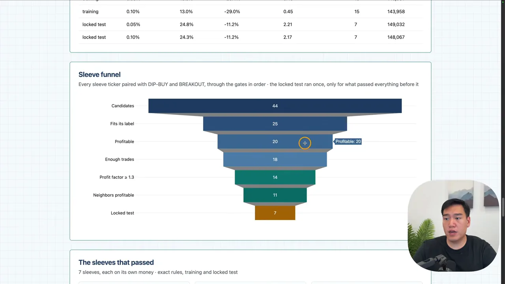
살아남은 7개는 QQQ 눌림목, QQQ 돌파, XLK(Technology Select Sector SPDR Fund) 눌림목, XLK 돌파, XLF(Financial Select Sector SPDR Fund) 돌파, XLY(Consumer Discretionary Select Sector SPDR Fund) 눌림목, GLD 눌림목이에요. 화면에는 슬리브마다 10만 달러로 따로 돌린 자산 곡선이 있고, 오른쪽 음영이 잠긴 검증 구간이에요. 모두 그 구간에서도 올라가요.
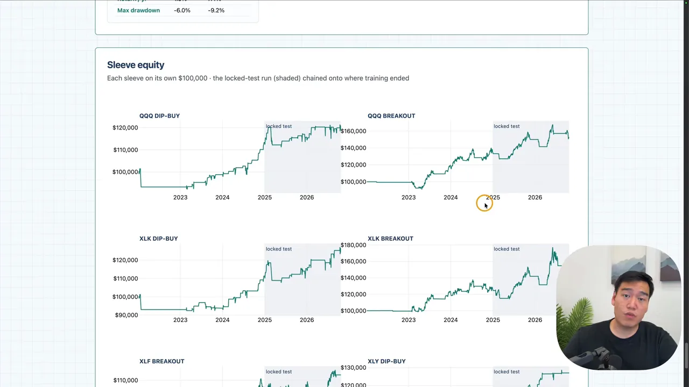
아이디어는 두 군데서 와요. 그림 왼쪽 전구는 내 아이디어, 오른쪽 반짝이는 Claude의 아이디어예요. 둘 다 같은 깔때기로 들어가요.
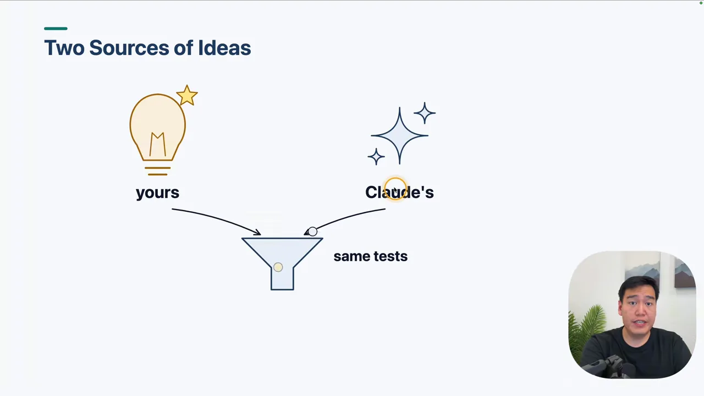
- 프롬프트 4B(선택): Claude가 이름표에 맞는 새 슬리브 규칙 10개를 내고, 시험 전에 목록을 보여 줘요. 매번 다르게 나오니 통과해도 바로 계좌에 넣지 않고 대기석에 둬요. 막연히 '슬리브 찾아 줘'라고 하면 인터넷에 흔한 전략을 되풀이하니 방향을 줘야 해요.
- 프롬프트 4C(선택): 스크리너를 슬리브로 시험해요. 최대 10종목을 들고요. 여섯째 줄이 핵심이에요. 오늘의 S&P 500 명단에는 잘된 회사만 남아 있어서, 그 명단으로 과거를 시험하면 실제보다 좋아 보여요. 이 생존 편향을 보고서에 꼭 적게 해요.
코어와 슬리브 합치기
그림 위 줄처럼 코어의 수익에 슬리브 수익이 더해져요. 아래 줄이 더 중요해요. 빨간 빗금(코어만의 낙폭)보다 파란 선(합친 계좌의 낙폭)이 얕아요. 슬리브는 코어와 같은 때 빠지지 않아서 서로 상쇄해요.
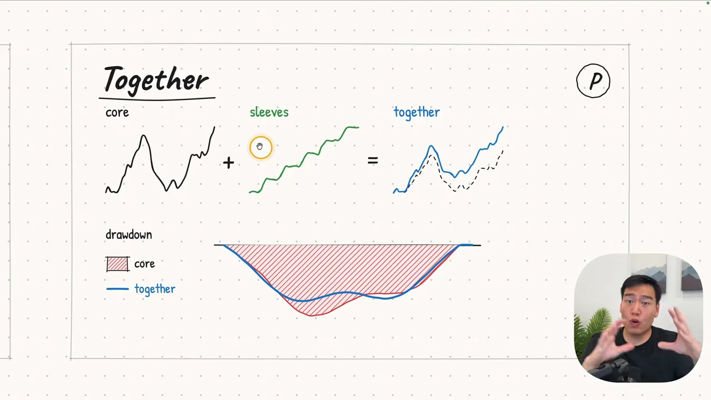
프롬프트 5는 계좌를 완성해요. 코어는 늘 100% 투자하고, 슬리브가 신호를 내면 증거금으로 빌린 돈으로 계좌의 20%를 더 사요. 그래서 CLAUDE.md의 '롱만, 레버리지 없음'을 '슬리브는 증거금으로 살 수 있음'으로 바꿔요. 코어만으로 시작해 수익 대비 낙폭을 가장 많이 올리는 슬리브를 하나씩 더하고, 최대 3개까지예요. 티커당 하나, 이미 고른 것과 상관 0.6을 넘으면 건너뛰어요. 요동치는 날 슬리브를 절반으로 줄이는 규칙도 시험했는데, 화면의 최종 설정은 '크기 규칙 꺼짐'이에요.
뽑힌 건 QQQ 돌파, XLK 눌림목, GLD 눌림목이에요. 상관 표에서 코어와 QQQ 돌파가 0.63으로 가장 높고, GLD 눌림목은 다른 모두와 0.1 미만이에요. 아래 '최종 계좌' 표가 결과예요.
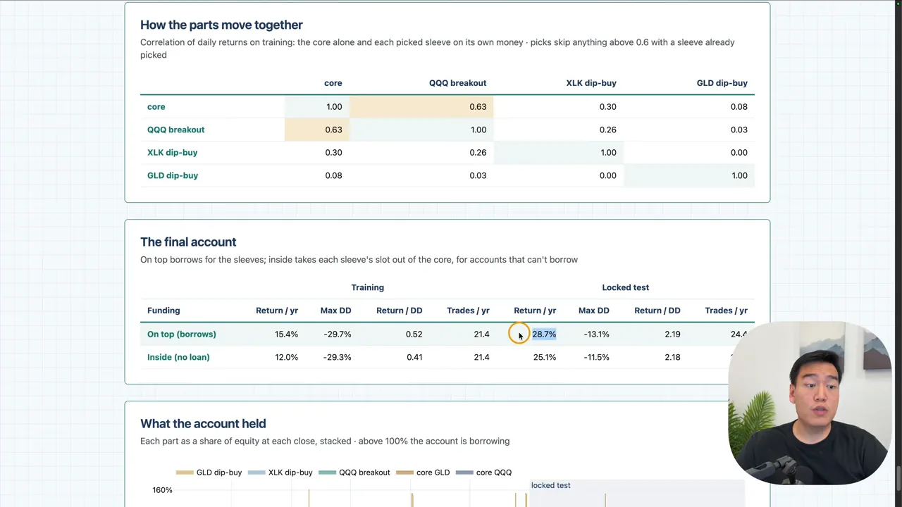
| 계좌 | 학습 연 수익 | 학습 최대 낙폭 | 잠긴 검증 연 수익 | 잠긴 검증 최대 낙폭 |
|---|---|---|---|---|
| 코어만 (QQQ/GLD) | 13.5% | -28.4% | 24.8% | -11.2% |
| 전체, 빌려서 얹음 | 15.4% | -29.7% | 28.7% | -13.1% |
| 전체, 빌리지 않음 | 12.0% | -29.3% | 25.1% | -11.5% |
대시보드 첫 장 '전체 시스템'은 2022-01-03부터 한 번에 돌린 결과예요. 초록 선(전체 계좌)이 244,092달러, 남색 선(SPY 보유)이 169,912달러로 끝나요. 왼쪽 2022년 구간에서는 초록 선이 남색보다 조금 더 깊이 빠졌어요. 발표자도 나쁜 해에는 시장보다 조금 더 빠진다고 인정해요.
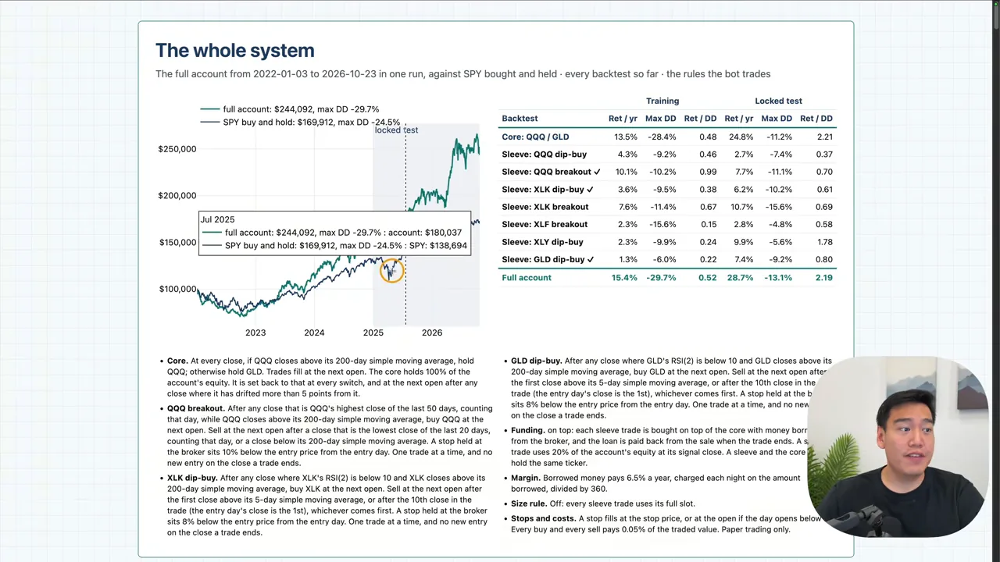
프롬프트 5B(선택)는 앞의 VIX·시장 폭 필터를 시험해요. 생각을 평범한 말로 적으면 Claude가 정확한 규칙으로 바꿔요. VIX는 FRED(무료 가입)에서, 시장 폭은 Yahoo 종목 데이터에서 받아요. 필터가 있을 때와 없을 때를 비교해, 학습 구간과 잠긴 검증 모두에서 수익 대비 낙폭이 나아질 때만 통과예요. 발표자는 이 VIX 규칙을 찾기까지 필터 1,600개 이상을 시험했다며, 운도 섞였으니 실패한 것까지 기록하고 통과해도 모의 운용부터 하라고 해요.
고른 슬리브가 아니라 '고르는 방식'을 시험해요
슬리브는 2022~2024년으로 딱 한 번 골랐어요. 하지만 전략은 쇠퇴하니 실제로는 분기마다 다시 골라요. 한 분기의 좋은 선택은 운일 수 있어도, 분기마다 계속 통하는 '고르는 방식'은 운으로 얻기 어려워요. 그림 위쪽 격자의 열 하나가 한 분기의 선택이에요. 그 아래 '고르기'(2년)와 '확인'(최근 1년) 막대가 분기마다 오른쪽으로 밀려가요. 맨 아래 파란 선이 이 일상을 처음부터 끝까지 돌린 백테스트, 점선이 코어만이에요.
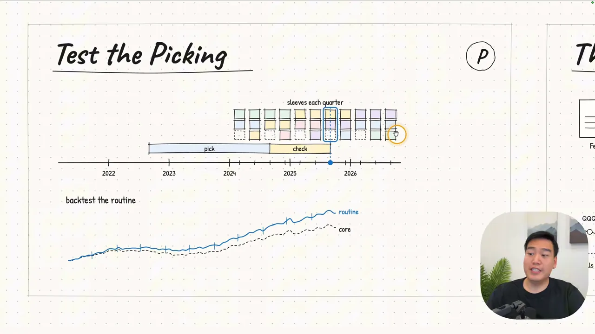
프롬프트 6은 날짜를 주면 그날 골랐을 슬리브를 돌려주는 파일을 만들어요. 고르기 구간이 2년이라 최소 거래 수는 눌림목 10회, 돌파 4회로 낮춰요. 최근 1년 수익 대비 낙폭 순으로 최대 3개를 고르고, 하나나 둘만 통과하면 그만큼만 들어요. 빈 자리는 거래하지 않아요. 미래를 안 봤는지는 이렇게 확인해요. 중간 분기 말 기준으로 전체 데이터로 한 번, 그날 뒤를 잘라 한 번 돌려 두 선택이 같아야 해요. 그다음 2024년 초부터 11개 분기 말에 돌려 선택을 저장하고, 전체를 백테스트해요. 프롬프트 5의 슬리브는 2024년을 이미 본 것이니 공정한 비교는 2025년부터라고 보고서에 적게 해요.
AI 층: 연준 성명을 읽는 Claude
그림 위쪽이 시험 방식이에요. 연준 성명(Fed) 하나를 두 번 판단받아요. 위는 날짜(2022)를 보여 주고, 아래는 날짜와 이름을 가려요. 각각 돋보기(새 Claude 사본)를 거쳐 '금' 또는 '유지'가 나오고, 자물쇠로 먼저 저장해요. 오른쪽 상자는 저장한 뒤에 채점한다는 뜻이고, 아래에 '깨끗한 시험 아님' 경고가 있어요. 맨 아래는 QQQ 위에 판단이 적용된 구간이에요.
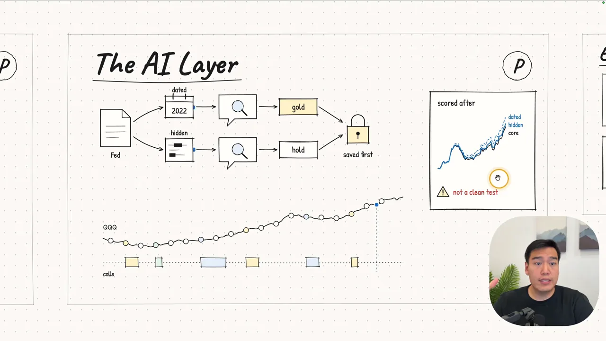
날짜를 가리는 이유는 Claude가 그 시기에 대해 많이 읽어서, 날짜를 보면 그다음 시장이 어땠는지 기억할 수 있어서예요. 그것도 룩어헤드예요. 그림처럼 모델의 기억이 2022~2026년 전체에 걸쳐 있고, 재생도 같은 기간이에요. 날짜를 가려도 문장에서 시기가 드러날 수 있어요. 그래서 이건 깨끗한 시험이 아니라 다시 재생해 본 것이고, 보통 시험보다 덜 믿어야 해요.
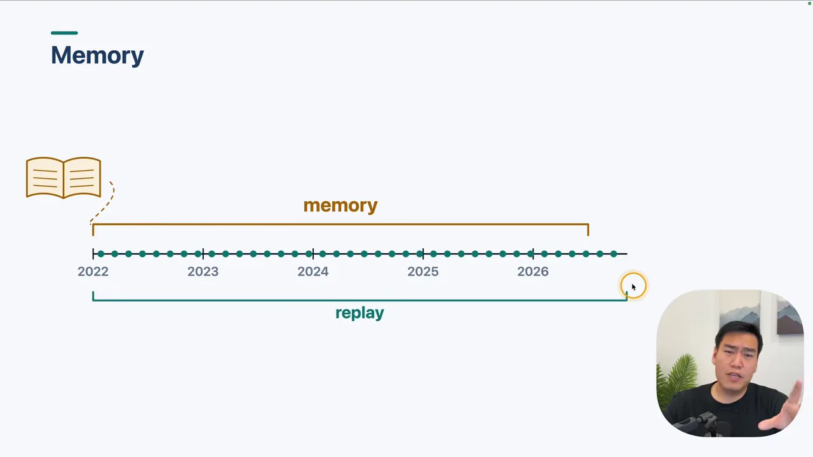
성명은 오후 2시에 나오니 판단은 다음 날 시가부터 5·10·20일 동안 적용돼요. 비교는 셋이에요. 코어만, 날짜 보인 판단, 날짜 가린 판단. 날짜 보인 쪽은 미래를 알아서 가장 좋게 나와야 정상이에요. 날짜 가린 쪽이 코어만보다 나을 때만 켜요. 프롬프트 7은 모든 성명마다 Claude를 두 번 호출해 며칠이 걸린다며 발표자는 직접 돌리지 않았어요. 실적 보고서, 특정 종목 뉴스, 믿는 뉴스레터처럼 다른 글에도 같은 방식을 쓸 수 있다고 해요.
원하면 더하는 검사
최소 일곱 검사 위에 넷을 더 할 수 있어요. 그림의 네 칸이에요.
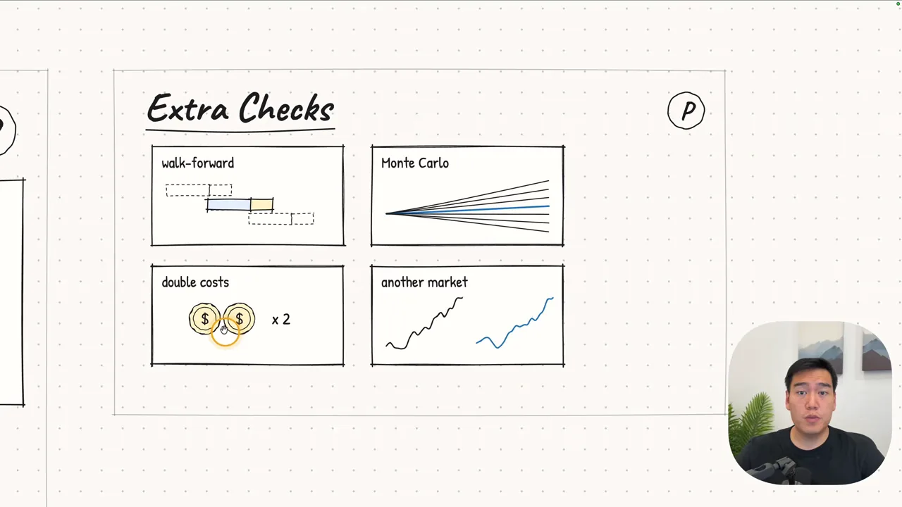
- 워크포워드: 구간마다 설정을 다시 고르고 바로 뒤 구간에서 시험해요. 앞의 '고르는 방식 시험'이 그 한 형태예요.
- 몬테카를로: 거래 순서를 섞어 가능한 모든 경로를 봐요.
- 2배 비용: 최악의 체결과 수수료를 가정해도 이익인지 봐요.
- 다른 시장: SPY에서 통한 눌림목이 DIA에서도 통하는지 봐요. 한 티커에서만 통하면 그 티커 역사에 맞춰진 것일 수 있어요.
Alpaca에 연결해 매일 돌리기
장 마감에서 다음 날 시가까지
하네스는 봇 그 자체예요. 그림의 시간표를 왼쪽부터 봐요. 오후 4시 장 마감, 7시 15분 봇 실행(그날 가격을 받고 신호를 계산해 주문을 넣음), 밤새 대기(queued), 9시 30분 시가 체결이에요. 왼쪽 괄호가 백테스트와 봇을 묶어요. 둘이 같은 시간표를 쓴다는 뜻이에요.
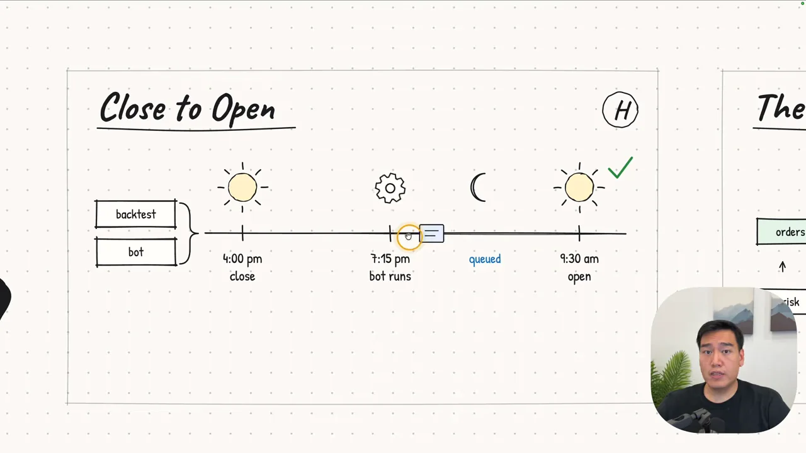
주문은 시가 주문(market on open)이에요. 시가가 얼마든 그 가격에 사고팔아요. 7시 이후에 보내는 건 Alpaca 때문이에요. 발표자는 Alpaca가 오전 9시 28분부터 저녁 7시 사이에 들어온 시가 주문을 거절한다고 해요.
모의 계좌부터
봇은 모의 계좌에서 거래해요. 그림의 초록 'paper' 카드는 시장과 연결돼 체크가 붙었고, 오른쪽 'live' 카드는 자물쇠로 잠겨 있어요. 실제 시장 가격으로 돌지만 내 돈이 아니에요. 실계좌는 이 강의에서 잠가 두고, 최소 몇 주~몇 달 돌려 본 뒤에 열어요.
Alpaca에 무료로 가입하고 API 키를 만들어요. 키와 시크릿 키는 페이지를 새로 고치면 사라지니 바로 복사해요. 그다음 Claude에게 .env 파일만 만들어 달라고 해요. API 키, 시크릿 키, 모의 계좌 여부(true), 나중에 쓸 텔레그램 토큰과 채팅 ID(Identifier) 칸이 생겨요. 값은 폴더에서 파일을 직접 열어 손으로 붙여 넣어요. 하우스 규칙에 따라 Claude는 이 파일을 열지도 출력하지도 않아요.
프롬프트 8: 봇 만들기
거래 코드를 쓰기 전에 네 가지를 먼저 해요. 신호 코드가 백테스트와 같은 파일 하나에만 있는지 확인하고, 옮긴 게 있으면 계좌 시험을 다시 돌려 숫자가 그대로인지 증명해요. 키가 채워졌는지 값은 보여 주지 않고 '채워짐'만 출력해요. Alpaca 연결 코드를 설치하고, 모의 계좌에 붙어 잔고·보유·미체결 주문과 증거금 허용 여부를 보여 줘요.
봇에는 전략 규칙 목록이 없어요. 프롬프트 5에서 만든 규칙 파일을 읽으니까요. 대신 브로커 사정이 적혀 있어요.
- 시가 주문은 정수 주만 돼서 모두 내림하고 남는 건 현금으로 둬요.
- 주문마다 고유 ID를 붙여 같은 주문이 두 번 들어가지 않게 해요.
- 손절 주문이 걸려 있으면 Alpaca가 그 주식을 파는 다른 주문을 막아요. 그래서 슬리브를 팔기 전에 손절부터 취소해요.
저녁 실행은 순서가 고정된 11단계예요. 그중 셋째 '대조'는 Alpaca가 말하는 보유와 봇이 아는 보유를 비교해서, 다르면 거래하지 않고 멈춘 뒤 알려요. 넷째는 백테스트와 같은 출처에서 새 가격을 받되 연구용과 다른 파일에 저장해서, 연구 결과가 바뀌지 않게 해요. 일곱째는 내일을 덮는 연준 판단이 저장돼 있는지 보고, AI 층이 켜져 있을 때만 써요. 아홉째 리스크는 모든 주문을 한도와 대조해요.
아침 확인은 짧아요. 손절 주문은 실제로 주식을 가진 뒤에만 걸 수 있어서, 시가에 산 그날 아침 실제 체결가의 8% 또는 10% 아래에 손절을 걸어요. 모든 열린 거래에 손절이 남아 있는지도 확인하고, 없으면 다시 걸어요. 시험 모드는 주문 전송과 파일 변경만 빼고 다 해 보는데, 아무 과거 거래일로 돌릴 수 있어서 주말에도 시험할 수 있어요. 실제 실행은 계좌가 모의 계좌이고 뉴욕 시간 저녁 7시~자정일 때만 시작해요. 시험은 셋이에요. 최근 60거래일 동안 봇 신호가 백테스트 신호와 같은지, 주문을 두 번 돌려도 두 번째는 아무것도 안 보내는지, 연준 판단은 그것이 덮는 날에만 쓰이는지예요.
결과는 시험 17개 통과, 시험 모드 정상, 시험 주문 접수 후 취소 성공이었어요. 대시보드 '실시간' 영역에는 티커별 오늘의 레짐이 있어요. QQQ는 200일선 위·요동, GLD는 아래·차분이에요. 그 아래는 오늘 밤 슬리브 상태예요. 첫 실제 실행이면 QQQ 약 141주를 사요.
매일 한 바퀴
저녁 실행을 고리로 그린 그림이에요. 맨 위 '잠금?'에서 출발해요. 이미 실행 중이면 이번 실행은 멈춰요. 오늘이 거래일이 아니어도 멈춰요. 이어서 대조 → 데이터 → 레짐 → 신호 → AI 판단(파란 칸) → 비중 → 리스크 → 주문(초록 칸) → 기록으로 돌아와요.
대조는 오늘 체결된 손절처럼 예상된 차이만 기록하고 넘어가요. 그 밖의 불일치는 멈춰요. 첫 실행 때 계좌에 봇이 사지 않은 보유가 있어도 멈추니, 첫 실행 전에 모의 계좌를 비워 둬요. 데이터 단계는 티커의 마지막 가격이 오늘 것이 아니면 멈춰요. 낡은 가격으로 거래하지 않으려는 거예요.
안전장치 넷과 리스크 한도 셋
그림의 네 칸이 기본 안전장치예요.
- 브로커에 건 손절: 컴퓨터가 꺼지거나 봇이 죽어도 손절은 Alpaca에서 작동해요.
- 중복 없음: 주문 ID를 날짜·티커·매수매도·슬리브로 만들어, 봇이 두 번 돌아도 두 번째는 이미 있는 주문을 보고 건너뛰어요.
- 잠금 파일: 실행 중에는 잠금을 쥐고 있어 봇 두 개가 동시에 돌 수 없어요. 중간에 죽어도 잠금은 정리돼 다음 저녁은 정상으로 돌아요.
- 손실 한도: 계좌가 전날보다 3% 넘게 빠지면 그날 밤 새 슬리브를 열지 않고 알려요. 청산과 코어는 계속 돌아요. 주문 하나가 목표보다 훨씬 클 수 없고, 목표 합계는 코어 100%와 거래 중인 슬리브 자리를 넘지 못해요.
프롬프트 8B는 리스크 한도 셋을 더해요. 모두 봇이 '덜 하게'만 만들고, 규칙은 하나도 바꾸지 않아요.
| 한도 | 언제 | 무엇을 하나 |
|---|---|---|
| 일시 정지 | 프로젝트 폴더에 PAUSE 파일이 있을 때 | 새 슬리브와 새 차입을 멈춰요. 코어는 규칙대로, 열린 거래는 청산과 손절대로 계속해요. 코어를 얼리면 폭락 내내 QQQ를 들고 있을 수 있어서예요 |
| 나쁜 하루 정지 | 하루에 5% 넘게 빠졌을 때 | 봇이 직접 PAUSE를 만들고 알려요. 다시 시작하라고 할 때까지 새 거래가 없어요. 작은 하락은 앞의 3% 규칙이 다음 날 저절로 풀려요 |
| 차입 정지 | 계좌가 고점 대비 백테스트 최악 낙폭보다 더 빠졌을 때 | 빌리기를 멈추고 새 슬리브는 코어에서 돈을 떼어 써요. 그 낙폭의 절반 안으로 회복하면 다시 빌려요 |
정지는 말로 해요. Claude에게 '봇 멈춰', '전부 팔아', '다시 시작해'라고 하면 파일을 만들거나 지우고, 다음 저녁 실행이 무엇을 할지 알려 줘요. 결과 화면에는 한도를 하나씩 켰을 때 오늘 밤 주문이 어떻게 바뀌는지 시험 실행이 나와요.
어디서 돌릴까요
그림의 세 선택지는 내 컴퓨터(켜져 있어야 함), 클라우드 작업(컴퓨터가 꺼져도 됨), 서버(늘 켜져 있지만 돈과 설정이 듦)예요. 일봉 봇은 하루 한 번이면 되니 내 컴퓨터로 충분해요. 다만 저녁 7시 15분에 주문을 넣으려면 그때 컴퓨터가 켜져 있어야 해요.
스케줄러는 둘이에요. 봇은 그냥 파이썬이라 Claude 없이 돌아요. Claude는 만들고 리뷰할 때만 써요. 컴퓨터 자체 스케줄러가 30분마다 작은 스크립트를 깨우고, 스크립트가 시계를 보고 할 일이 있는지 정해요. 오른쪽 Claude 앱은 생각이 필요한 두 작업만 맡아요. 평일 연준 확인, 토요일 리뷰예요.
프롬프트 9: 스케줄과 텔레그램 알림
텔레그램 알림은 선택이에요. 텔레그램에서 BotFather를 찾아 /newbot을 보내고, 이름을 지어요. 사용자 이름은 bot으로 끝나야 해요. 받은 토큰을 .env에 넣고, 내 봇에게 시작과 hello를 보내요. 그다음 브라우저에서 https://api.telegram.org/bot<토큰>/getUpdates를 열면 채팅 ID가 보여요. 이것도 .env에 넣어요.
알림은 네 종류예요. 실패 즉시(멈춘 단계와 함께), 저녁 실행 뒤 요약(엔진이 선 위인지, 코어가 내일 들 것, AI 판단, 슬리브별 상태와 대기 주문), 아침 확인 뒤 요약(체결과 건 손절), 밤 11시 30분까지 저녁 실행이 없으면 놓침 알림이에요.
스케줄은 30분마다 도는 스크립트 하나예요. 뉴욕 시간을 기준으로 거래일 저녁 7시 이후 한 번 저녁 실행, 시가 조금 뒤 한 번 아침 확인을 해요. 그래서 내가 어느 시간대에 있든, 서머타임이 바뀌든 상관없어요. Mac은 launchd, Windows는 작업 스케줄러에 설치해요. 컴퓨터가 그 시간에 잠들지 않게 하는 방법은 Claude가 알려만 주고 설정은 직접 바꾸지 않아요.
모든 건 프로젝트 폴더의 파일이에요. src에는 봇, 아침 확인, 스케줄러가 깨우는 스크립트가 있어요. data에는 연구용 사본과 봇 전용 사본이 따로 있고, logs에는 모든 실행과 주문, 봇이 무엇을 가졌다고 생각하는지 적은 state.json이 있어요.
장중 봇이라면
분봉으로 실거래하려면 그림처럼 바뀌어요. 실시간 피드가 장 내내 켜진 서버로 들어오고, 서버가 브로커에 주문해요. 이 연결을 웹소켓이라고 해요.
발표자는 Alpaca 무료 플랜이 거래소 하나·30종목까지이고, 전 거래소는 월 99달러, Massive와 Databento 실시간은 월 199달러라고 해요. 주문은 가격이 움직이는 중에 나가니 슬리피지가 커서 비용 설정을 키워야 해요. 피드가 끊기거나 가격이 멈추면 거래를 멈추는 안전장치, 장 마감 전에 정리하는 규칙도 더해야 해요. ALPHA 틀 자체는 그대로예요.
프롬프트 10: 연준 확인을 스케줄로
AI 층을 쓴다면 하루가 이렇게 가요. 오후 2시 연준 성명, 4시 장 마감, 5시 Claude가 새 성명을 읽고 판단과 한 줄 이유를 저장해 휴대폰으로 보내요. 7시 이후 봇이 저장된 판단을 읽고, AI 층이 켜져 있으면 다음 날 시가 주문에 반영해요.
스킬은 연준 사이트에서 최신 성명을 찾아요. 이미 판단이 저장된 성명이면 멈춰서 성명당 판단은 한 번뿐이에요. 5거래일 넘게 지난 성명은 시장이 이미 반응했으니 판단하지 않고 기록만 해요. 늦은 판단을 제때 한 척하지 않아요. 날짜와 이름을 가린 뒤 새 Claude 사본에게 판단을 받아 저장하고 알려요. 규칙을 고치거나 주문을 내지는 않아요. 저장 파일에는 성명 날짜, 저장 시각, 행동, 유지 일수, 한 줄 이유, 모델, 성명 주소가 들어가고 한 번 쓰면 바뀌지 않아요. 연습 모드는 오래된 성명으로도 판단을 만들어 보되 봇이 읽지 않는 폴더에 저장해요.
자동화 사다리
봇에 얼마나 맡길지는 세 칸이에요. 맨 아래 '알림'은 봇이 주문을 계산해 보내면 내가 직접 주문해요. 가운데 '승인'은 내가 예라고 해야 주문이 나가요. 맨 위 '자동'은 혼자 돌아요. 그림의 '여기서 시작' 표시는 맨 아래 칸에 있어요.
돌아가는 봇을 관리하기
모의 계좌와 백테스트 겹쳐 보기
적응은 봇이 돌기 시작한 뒤의 모든 일이에요. 대부분의 장기 전략도 언젠가 통하지 않게 되니, 슬리브가 망가진 걸 알아채고 아무것도 부수지 않고 갈아 끼울 방법이 필요해요. 먼저 실제 성적과 백테스트를 겹쳐요. 그림의 파란 선이 모의 계좌, 점선이 같은 날들의 백테스트예요. 둘이 벌어지는 곳마다 빨간 원과 이유가 붙어 있어요.
프롬프트 11은 봇이 거래한 날들로 백테스트를 다시 돌려요. 봇과 같은 출발점, 같은 연준 판단으로요. 그리고 봇 기록과 Alpaca 체결을 한 줄씩 나란히 놓아요. 날짜, 티커, 주식 수, 백테스트 가격, 실제 가격, 차이(%와 달러)가 들어가요. 차이는 여섯 묶음으로 나눠요. 체결, 시점, 데이터, 반올림(봇은 정수 주만 사서 현금이 조금 남음), 한도(봇의 안전 한도가 주문을 바꿈), 규칙이에요. 마지막 '규칙'은 봇이 규칙에 없는 일을 했다는 뜻이라 고칠 버그예요.
아직 첫 실제 실행 전이라 비교할 거래는 없었어요. 대신 만든 가상 모의 이력으로 시험 33개를 통과했어요. 몇 주 돌고 나면 대시보드에 두 선이 겹쳐 보이고, 차이마다 묶음이 붙어요.
슬리브를 빼는 세 가지 이유
슬리브를 빼는 이유는 손실이 나기 전에 미리 적어 둔 세 가지뿐이에요. 돈을 잃고 있을 때 결정하지 않으려는 거예요. 그림의 세 칸을 봐요.
- 킬 라인: 시험 때 최악 낙폭의 2배예요. 시험 때 최악이 10%였다면 20%에서 빼요. 넘으면 봇이 스스로 끄고, 다음 날 시가에 팔고, 알려요.
- 재선정 탈락: 분기마다 '고르는 방식'을 다시 돌려 그 슬리브가 다시 뽑히지 않으면, Claude가 대기석의 다른 슬리브로 바꾸자고 제안하고 사람이 예·아니요를 정해요.
- 거래 빈도 이상: 3개월 이상 돌았는데 시험 때보다 절반 미만이나 2배 넘게 거래하면 월간 점검이 검토 표시를 해요. 그 슬리브가 맞춰진 시장이 바뀌었다는 신호인 경우가 많아요.
프롬프트 12는 슬리브마다 킬 라인을 시험 낙폭과 함께 적고, 저녁 실행의 대조 바로 뒤에 점검을 넣어요. 코어는 다르게 다뤄요. 계좌가 코어의 시험 최악 낙폭의 1.5배를 넘으면 알리고 새 슬리브를 멈추지만, 코어는 계속 돌아요. 코어를 바꾸는 건 사람만 해요. 상태는 넷이에요. 유지(문제없음), 관찰(킬 라인의 절반을 넘었거나 실거래가 5번 미만), 검토(거래 빈도 이상), 제외(킬 라인을 넘음)예요.
결과 화면의 막대가 킬 라인이에요. QQQ 돌파는 약 22%, XLK 눌림목은 약 21%, GLD 눌림목은 18.9%예요. 오른쪽 끝 코어(계좌)는 약 43%로, 코어의 시험 최악 낙폭 약 28%의 1.5배예요.
대기석에서 교체하기
그림 왼쪽 빗금 칸이 코어예요. 교체 내내 건드리지 않아요. 오른쪽 위 슬롯 셋 중 하나가 비면(점선), 아래 대기석의 슬리브 하나가 '증명' 깔때기를 거쳐 올라가요. 밀려난 슬리브는 오른쪽 쓰레기통(은퇴)으로 가요.
대기석에는 관문을 다 통과했지만 계좌에 없는 슬리브가 모여요. 프롬프트 4, 4B, 새로 시험한 아이디어, 최근 재선정에서 온 것들이에요. 교체 전에 세 가지를 확인해요. 새 슬리브의 티커가 다른 슬리브와 겹치지 않는지, 코어와 각 슬리브와의 상관이 0.6 이하인지, 넣었을 때 계좌의 수익 대비 낙폭이 적어도 같은지예요. 바뀐 건 날짜·내용·이유·근거 시험과 함께 변경 기록에 남고, 다음 저녁 실행부터 적용돼요. 규칙 파일을 건드리는 건 이 교체와 킬 라인 자동 정지뿐이라, 계좌가 왜 지금 모습인지 늘 기록이 있어요.
규칙 바꾸기는 처음부터 다시
그림의 고리가 규칙을 바꾸는 유일한 길이에요. 아이디어 → 증명 → 모의 운용 → 켜기. 오른쪽 '실행 중인 코드 고치기'에는 빨간 X가 있어요.
새 아이디어는 Claude에게 평범한 말로 설명하고 프롬프트 4의 관문 파일로 돌려 달라고 하면 돼요. 규칙을 바꾼 버전은 새 아이디어로 취급돼, 똑같이 시험하고 기록해요. 실패하면 옛 버전이 계속 거래하고, 새 버전이 이길 때까지 바뀌지 않아요.
Claude의 정기 리뷰
리뷰도 Claude에게 맡겨요. 그림 위 줄이 토요일 달력이에요. 파란 점(매주)은 보고서, 초록 점(매월 첫 토요일)은 슬리브별 유지·관찰·검토, 별(분기 뒤 첫 토요일)은 재선정과 '내 예'예요. 맨 아래가 경계선이에요. 코드 고치기는 체크, 규칙 바꾸기는 X예요.
프롬프트 13은 리뷰를 세 부분짜리 스킬로 만들어요.
- 매주: 봇 기록, 변경 기록, 스케줄러 기록, 연준 판단, 그 주 Alpaca 체결을 읽고 모의 대 백테스트 비교를 다시 돌려요. 보고서에는 그 주 성적, 묶음별 차이, 오류와 경고, 놓친 실행, 연준 판단과 봇이 썼는지, 슬리브별 킬 라인까지 거리가 들어가요.
- 매월: 슬리브마다 실거래를 시험 때와 비교해요(거래 빈도, 승률, 평균 거래, 킬 라인 대비 낙폭). 상태를 매겨요. 그달 실거래일이 10일 미만이면 짧게 그렇다고만 적어요.
- 매 분기: 분기 마지막 거래일 기준으로 재선정을 돌려 지금 슬리브와 비교해요. 바뀌는 것마다 교체 점검을 시험 모드로 돌리고, 그 교체를 실행할 명령까지 적어 제안하고 기다려요. 직접 바꾸지는 않아요.
어느 부분도 나쁜 한 주나 한 달 때문에 슬리브를 빼지 않아요. 이미 한 일은 기록해서 두 번 하지 않고, 데이터가 모자라면 다음 토요일을 기다려요. 보고서 첫 세 줄은 텔레그램으로 와요.
사람이 할 일은 일주일에 10분
그림의 네 칸이 주간 점검이에요. 보고서, 알림, 킬 라인, 나중에 볼 목록. 시계 옆에 10분, 아래에 '대부분의 주에는 할 일 없음'이 적혀 있어요.
- 보고서에서는 오류와 놓친 실행을 봐요. Claude가 고쳤다면 말이 되는지 확인해요.
- 놓침 알림은 대개 컴퓨터가 잠들었다는 뜻이에요. 실패 알림은 멈춘 단계를 알려 줘요.
- '관찰' 슬리브는 다음 주에 다시 보고, 이미 '제외'된 슬리브는 꺼져 있으니 할 게 없어요.
- '나중에' 목록에서 시험할 만한 아이디어가 있으면 프롬프트 4 관문으로 돌려 달라고 해요. 분기마다 재선정 제안에 예·아니요를 해요.
소액 계좌와 자동화하지 말 것
시가 주문은 정수 주만 돼요. 그림 왼쪽 2,000달러 계좌의 20% 자리는 400달러라 500달러짜리 ETF를 한 주도 못 사요(X). 오른쪽 2만 달러 계좌는 같은 자리가 4,000달러라 8주를 사요.
발표자는 Alpaca에서 증거금을 쓰려면 2,000달러 이상이 필요하다고 해요. 오랫동안 2만 5천 달러 미만 계좌는 5거래일 동안 데이 트레이드를 3번만 할 수 있었는데, FINRA(Financial Industry Regulatory Authority)가 2026년 6월 4일 이 규칙을 없앴다고 해요. 브로커들은 이번 달까지 전환할 수 있으니 내 브로커를 확인하라고 해요. 이 시스템은 모든 거래를 하룻밤 넘겨 들고 가니 손절이 걸리지 않는 한 영향이 거의 없어요. 작은 계좌도 더 빠른 슬리브를 넣을 수 있게 됐지만, 매일 거래하는 슬리브는 여전히 수익의 약 25%를 비용으로 내요.
무엇을 자동화할지도 나눠요. 매일 똑같이 하는 일은 자동화해요. 데이터 받기, 신호 계산, 주문과 손절, 기록과 알림이에요. 규칙 바꾸기, 코어 바꾸기, 모의에서 실계좌로 옮기기는 사람이 정해요. 뉴스나 내 판단에 기대는 전략은 '알림' 단계에 두고 직접 주문해요. 실계좌로 옮기는 시점은 실전에서 통한다는 데이터가 충분히 쌓인 뒤라고 해요.
더 키우기, 흔한 실수 10가지, 브로커 고르기
기반 위에 올릴 일곱 가지
지금까지 만든 건 기반이에요. 그림 가운데 '내 시스템'(코어, 슬리브, 리스크 한도, 매일 도는 봇) 둘레에 일곱 가지가 있어요. 시장, 아이디어, 짧은 봉, 크기 조절, 옵션, AI, 두 번째 시스템이에요. 순서는 상관없고 필수도 아니에요. 규칙은 하나예요. 무엇을 더하든 같은 시험을 거치고, 학습 구간과 잠긴 검증 모두에서 계좌를 낫게 할 때만 남겨요.
- 내 시장: 모든 프롬프트가
CLAUDE.md의 '내 설정' 블록을 읽으니, 그 줄만 바꾸고 프롬프트를 처음부터 같은 순서로 다시 돌려요. 개별 주식은 티커 줄에 넣어요. 코인은 주말에도 거래되니 1년이 252봉이 아니라 365봉이고, 수수료가 주식보다 높으니 거래소의 실제 수수료를 비용 줄에 넣어요. - 내 아이디어: '일주일에 5% 빠지면 사고 제자리로 오면 판다'처럼 숫자가 정해진 규칙으로 적어 깔때기 맨 위에 넣어요. 같은 관문을 통과하면 대기석에 올라가요.
- 짧은 봉: 설정의 봉 크기를 1시간봉으로 바꾸면 하루 일봉 하나가 1시간봉 7개가 돼요. 규칙이 더 많이 보고 더 자주 거래해요. 시험할 거래는 늘지만 비용이 빨리 쌓이고, 데이터는 대개 유료이고, 하루 종일 켜진 서버나 VPS(Virtual Private Server)가 필요해요.
- 위험에 따른 크기: 강의의 VIX 필터는 켜고 끄는 스위치였어요. 다이얼로 쓸 수도 있어요. 화면 예시는 VIX 20 아래면 전액, 20~30이면 절반, 30 위면 끔이에요. 어느 쪽이 나은지는 시험해서 정해요.
- 옵션: 신호는 같은 규칙에서 나오고, 옵션은 그 결정을 주문하는 다른 방식일 뿐이에요. 콜옵션은 정해진 날까지 정해진 가격에 살 권리라서 적은 돈으로 오름폭을 얻고, 잃을 수 있는 최대는 옵션 값이에요. 어려운 건 시험이에요. 옵션 자체의 가격 이력이 필요한데 그 데이터는 대개 유료예요. Alpaca 모의 계좌는 옵션도 거래돼서 실시간으로 시험할 수 있어요.
- AI 더 붙이기: 연준 확인처럼 실적 보고서(3개월마다 회사가 내는 사업 현황)나 X 게시물, 좋아하는 뉴스 제공처를 읽게 할 수 있어요. 늘 짧은 판단 목록, 만료일, 먼저 저장이라는 제한을 둬요.
- 두 번째 시스템: ETF 시스템 옆에 코인 시스템을 따로 만들어요. 아래 그림이 그 규칙이에요.
그림처럼 두 시스템은 폴더, 설정, 모의 계좌를 따로 가져요. 가운데 주간 점검에서만 나란히 봐요. 두 계좌를 잇는 빨간 점선의 X가 핵심이에요. 봇 둘이 한 계좌를 쓰면 안 돼요. 봇은 계좌에 자기가 산 것만 있다고 보니, 남이 산 걸 보면 대조 단계에서 멈춰요.
흔한 실수 10가지
열 가지 대부분이 백테스트를 실제보다 좋아 보이게 만드는 실수예요. 첫째는 백테스트가 완벽해질 때까지 설정을 조정하는 거예요. 200일 대신 190, 210, 187을 다 해 보고 가장 좋은 걸 고르면, 그건 운이에요. 그림 왼쪽처럼 설정을 바꿔도 결과가 완만한 언덕이면 진짜이고, 오른쪽처럼 한 숫자만 뾰족하면 운이에요.
둘째는 잠긴 검증을 들여다보고 규칙을 바꾸는 거예요. 화면처럼 2025년~현재 상자의 자물쇠가 열리면 그 구간이 '이제 학습'이 되고, '남은 검증 없음'이 돼요. 실패했다면 규칙을 고치지 말고 아이디어 단계로 돌아가요.
셋째는 룩어헤드예요. 그림처럼 오늘 종가에서 신호가 나왔는데 그 종가에 사면(빨간 화살표) 안 돼요. 종가는 장이 끝나야 아니까요. 강의의 규칙은 모두 종가에 판단하고 다음 날 시가에 사요(초록 화살표).
넷째는 비용을 잊는 거예요. 강의는 한쪽 0.05%, 왕복 약 0.1%로 잡았어요. 막대가 1년 비용이에요. 1년에 5번 거래하면 0.5%, 50번이면 5%, 거의 매일인 250번이면 25%예요.
다섯째는 확인하지 않은 백테스터를 믿는 거예요. Claude도 실수하고, 가장 위험한 건 결과를 좋아 보이게 만드는 실수예요. 아무도 그걸 찾으러 가지 않으니까요. 답을 아는 가짜 가격(매일 같은 만큼 오르는)을 넣어 백테스터가 정답과 맞는지 먼저 봐요.
여섯째는 거래 몇 번만 보고 믿는 거예요. 그림의 막대는 승률 55%가 실제로는 어디쯤일 수 있는지예요. 10번이면 25~85%, 100번이면 45~65%, 400번이면 50~60%로 좁아져요. 가운데 점선이 동전 던지기 50%예요.
일곱째는 오늘의 종목 명단으로 과거를 시험하는 거예요. 2022년부터 스크리너를 시험하면서 오늘의 S&P 500 명단을 쓰면, 그 사이 빠진 회사가 아예 없는 셈이 돼요. 발표자는 최근 나이키가 S&P 500에서 빠졌다는 예를 들어요. 날짜마다 그날의 명단을 써야 해요.
여덟째는 논란이 있을 수 있다며 꺼낸 거예요. AI에게 매매를 통째로 맡기는 거예요. 왼쪽 '오늘 뭘 사지?'에 엔비디아, 금, 현금이 다 답으로 나올 수 있어서 시험할 수 없어요. 2022년을 물어도 Claude는 이미 그 뒤를 알고 있어요. 오른쪽처럼 AI는 제한된 층으로 얹고 매매는 시험된 규칙이 해요.
그래도 꼭 해 보고 싶다면 발표자는 하이브리드를 권해요. 엄격한 규칙과 데이터를 깔고, 규칙이 발동한 날들을 Claude가 보고 마지막 판단을 내리는 거예요. 다만 백테스트가 안 되니 실전 결과로만 믿을지 정해야 하고, 모델이 바뀌면 답도 크게 달라질 수 있어요.
아홉째는 너무 빨리 크게 가는 거예요. 모의 계좌가 백테스트와 맞을 때까지 기다리고, 실계좌는 작게, 전액은 완전히 믿게 된 뒤에요. 열째는 나쁜 한 주에 그만두는 거예요. 그림의 '이번 주' 하락은 왼쪽 '최악 하락'보다 작아서 '아직 범위 안'이에요.
범위를 크게 벗어나면 경고 신호예요. 그때를 위해 리스크 한도와 슬리브 제거 규칙이 이미 있어요. 감정으로 거래하지 않으려는 장치예요.
브로커를 바꿀 때
Alpaca가 안 되는 나라도 있고, 선물이 없고, 이미 다른 곳에 계좌가 있을 수도 있어요. 바뀌는 건 생각보다 적어요. 그림의 데이터 → 신호 → 규칙 파일 → 리스크는 그대로이고(초록), 주문·손절·보유 조회를 하는 마지막 '브로커 부분'(노란 칸)만 바뀌어요.
새 브로커는 기존 것을 지우지 말고 옆에 추가해요. 규칙 파일의 한 줄로 어느 브로커를 쓸지 정하면, 문제가 생겼을 때 그 한 줄로 되돌릴 수 있어요. 시험은 처음처럼 해요. 새 브로커의 모의 계좌로 몇 주 돌리고 백테스트와 맞춰 봐요.
- IBKR: Alpaca보다 훨씬 많은 나라의 고객을 받고, 선물과 세계 시장을 다뤄요. 대신 봇이 Alpaca처럼 인터넷으로 바로 붙지 않고, 내 컴퓨터에서 IB(Interactive Brokers) Gateway 프로그램이 계속 돌아야 해요. 일주일에 한 번쯤 다시 로그인해야 해요. Lite 플랜은 미국 주식·ETF 수수료가 없지만, 한 달 주문의 10% 넘게 시가나 종가에 몰리면 수수료가 붙는다고 해요. 이 봇은 거의 다 시가 주문이라 Pro를 권해요. 주당 소액 수수료에 최소 주문 수수료가 있지만 증거금 이율이 낮아요. 발표자가 확인했을 때 첫 10만 달러에 약 5.4%로, 강의가 쓴 Alpaca 6.5%보다 낮았어요.
- Schwab: 개발자 사이트에서 신청하고 승인을 기다려야 해요. API로 주식, ETF, 옵션은 되지만 선물은 안 돼요. 프로그램 로그인이 7일만 유지돼서 매주 손으로 다시 로그인해야 해요. 발표자가 아는 한 API용 모의 계좌는 없어요.
- 코인: 봇이 이미 붙어 있는 Alpaca가 가장 쉽고, 모의 계좌도 코인을 거래해요. Kraken, Coinbase 같은 거래소도 API가 있어요. 수수료는 거래마다 %로 붙어서 주식의 0.05%보다 훨씬 높아요. API 키를 만들 때 거래는 켜고 출금은 꺼요. 그러면 키가 새어도 돈을 빼 갈 수 없어요.
마지막 비교표는 세 줄이에요. Alpaca는 모의 계좌가 있고, 혼자 로그인을 유지하지만, 선물이 없어요. IBKR은 모의 계좌와 선물이 있지만 프로그램을 계속 켜 두고 매주 로그인해야 해요. Schwab은 셋 다 X예요.